<!doctype html>
<html lang="en">
<head>
  <meta charset="utf-8">
  <meta name="viewport" content="width=device-width, initial-scale=1">
  <title>arxiv digest — 2026-07-07</title>
  <style>
:root {
  --bg: #ffffff;
  --fg: #1f2328;
  --muted: #59636e;
  --border: #d0d7de;
  --card: #f6f8fa;
  --link: #0969da;
}
body {
  max-width: 980px;
  margin: 0 auto;
  padding: 2rem 1rem 5rem;
  font-family: -apple-system, BlinkMacSystemFont, "Segoe UI", Helvetica, Arial, sans-serif;
  line-height: 1.55;
  color: var(--fg);
  background: var(--bg);
}
a { color: var(--link); }
img { max-width: 100%; height: auto; }
pre, code { background: var(--card); border-radius: 6px; }
pre { padding: 1rem; overflow-x: auto; }
blockquote { border-left: 4px solid var(--border); padding-left: 1rem; color: var(--muted); }
details { margin: 0.6rem 0; }
summary { cursor: pointer; font-weight: 600; }
.paper-figures-scroll {
  display: flex;
  gap: 1rem;
  overflow-x: auto;
  overscroll-behavior-x: contain;
  padding: 0.75rem 0.25rem 1rem;
  margin: 1rem 0 1.25rem;
  border-top: 1px solid var(--border);
  border-bottom: 1px solid var(--border);
  scroll-snap-type: x proximity;
}
.paper-figure-card {
  flex: 0 0 min(260px, 72vw);
  scroll-snap-align: start;
  background: var(--card);
  border: 1px solid var(--border);
  border-radius: 12px;
  padding: 0.55rem;
}
.paper-figure-card img {
  display: block;
  width: 100%;
  max-height: 240px;
  object-fit: contain;
  background: white;
  border-radius: 8px;
}
.paper-figure-caption {
  display: block;
  margin-top: 0.5rem;
  color: var(--muted);
  font-size: 0.85rem;
}
.figure-strip-hint {
  color: var(--muted);
  font-size: 0.9rem;
  margin-bottom: -0.3rem;
}
</style>
  <!-- MathJax: renders $...$ inline math and $$...$$ display math, plus
       \(...\) and \[...\]. Loaded from the official CDN; works offline
       once cached. Configured to skip code/pre blocks so arxiv IDs that
       look like dollar amounts don't get mangled. -->
  <script>
    window.MathJax = {
      tex: {
        inlineMath: [['$', '$'], ['\\(', '\\)']],
        displayMath: [['$$', '$$'], ['\\[', '\\]']],
        processEscapes: true,
        processEnvironments: true
      },
      options: {
        skipHtmlTags: ['script', 'noscript', 'style', 'textarea', 'pre', 'code'],
        ignoreHtmlClass: 'tex2jax_ignore',
        processHtmlClass: 'tex2jax_process'
      }
    };
  </script>
  <script id="MathJax-script" async
    src="https://cdn.jsdelivr.net/npm/mathjax@3/es5/tex-chtml.js"></script>
</head>
<body>
<header style="background-color: #333; color: white; padding: 15px; margin-bottom: 20px;">
  <h1 style="margin: 0; font-size: 24px;">
    <a href="https://ochelpan.github.io/arXiv_clean/" style="color: white; text-decoration: none;">Main</a>
  </h1>
</header>

<h1>Daily arXiv Report</h1>

<hr>
<p>
<a href="index.html">← Index</a>
 · <a href="papers_01.html">← Previous</a> · <a href="papers_03.html">Next →</a>
</p>
<hr>

<h2>Papers 21–40</h2>
<p><a id="paper-2607.04864"></a></p>
<h3 id="emergence-of-the-scrooge-ensemble-in-the-sachdev-ye-kitaev-model"><a href="http://arxiv.org/abs/2607.04864v1">Emergence of the Scrooge Ensemble in the Sachdev-Ye-Kitaev Model</a></h3>
<p><strong>Authors:</strong> Zeyu Liu, Pengfei Zhang<br>
<strong>Type:</strong> theory · <strong>Category:</strong> statistical mechanics · <strong>PDF:</strong> <a href="https://arxiv.org/pdf/2607.04864v1">https://arxiv.org/pdf/2607.04864v1</a><br>
<strong>Analysis basis:</strong> full PDF text, analyzed in chunks
<strong>Topic relevance:</strong> 🔥 <code>entanglement &amp; information structure</code> <strong>4/5</strong> · 🔥 <code>measurement-induced transitions</code> <strong>4/5</strong> · <code>non-equilibrium dynamics</code> <strong>3/5</strong> · <code>quantum measurements</code> <strong>3/5</strong> · <code>non-equilibrium universality</code> <strong>2/5</strong> · <code>scars &amp; prethermalization</code> <strong>2/5</strong> · <code>Keldysh / 2PI / non-Gaussian methods</code> <strong>1/5</strong> · <code>correlated / nonlocal dissipation</code> <strong>1/5</strong> · <code>driven-dissipative phase transition</code> <strong>1/5</strong> · <code>methods for driven-dissipative</code> <strong>1/5</strong></p>
<div class="figure-strip-hint">↔ Scroll figures horizontally</div>
<div class="paper-figures-scroll">
<figure class="paper-figure-card">
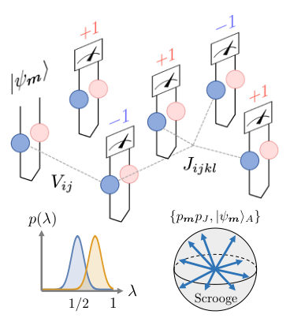
<figcaption class="paper-figure-caption"><b>Fig 1.</b> FIG. 1. Schematic illustration of the main setup. The sys- tem is initialized in a thermofield double state of N pairs of Majorana fermions, denoted by the blue and red circles. Af- ter time evolution, projective measurements are performed on most pairs of Majorana fermions, yielding outcomes m and a post-measurement state |ψm⟩A. We analyze the distribution p(λ) of measurement outcomes with λN entries of +1, as well as the projected ensemble {pmpJ, |ψm⟩A}, where pJ is the distribution of random couplings.</figcaption>
</figure>
<figure class="paper-figure-card">
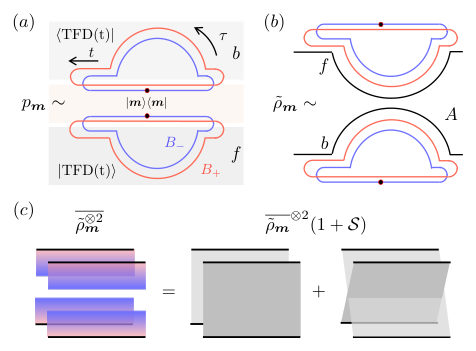
<figcaption class="paper-figure-caption"><b>Fig 2.</b> FIG. 2. (a) Path-integral representation of the measure- ment probability pm, where the system B is divided into B+ and B−according to the measurement outcomes. f/b denotes the forward/backward evolution branches. (b) Path-integral representation of the unnormalized post-measurement density matrix ˜ρm for subsystem A. (c) Illustration of the two-replica calculation. Here, the colored shaded regions denote the path integral of subsystem B, while the gray shaded region indi- cates the connectivity of the saddle-point solution.</figcaption>
</figure>
<figure class="paper-figure-card">
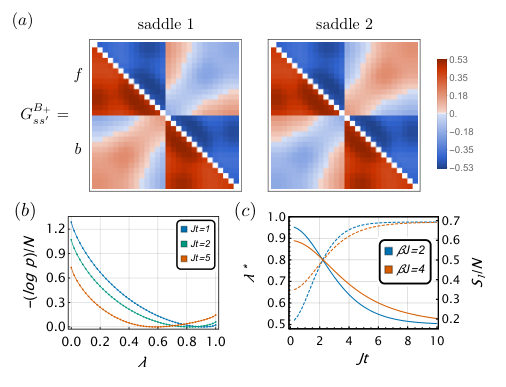
<figcaption class="paper-figure-caption"><b>Fig 3.</b> FIG. 3. Numerical results for the measurement probability and participation entropy. (a) Two saddle-point solutions of GB+ for βJ = Jt = 2 and λ = 0.82. (b) Probability density p(λ) for different values of Jt for βJ = 2. (c) The most proba- ble measurement fraction λ∗and the participation entropy S1 as functions of the evolution time t for βJ = 2, 4 [71]. Dashed lines correspond to S1, and solid lines correspond to λ∗.</figcaption>
</figure>
<figure class="paper-figure-card">
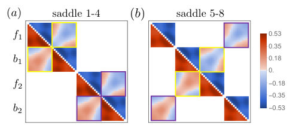
<figcaption class="paper-figure-caption"><b>Fig 4.</b> FIG. 4. Saddle-point solutions of GB+ for βJ = Jt = 2 and λ = 0.82. We show two representative solutions correspond- ing to the two distinct pairing patterns illustrated in Fig. 2(c). From each representative solution, three additional solutions can be obtained by flipping the signs of the interbranch cou- plings indicated by the yellow and/or purple squares. We denote the forward/backward evolution branch of the r-th replica by f/br. In (a), the pairing pattern is (f1, b1) and (f2, b2), while in (b), it is (f1, b2) and (f2, b1).</figcaption>
</figure>
<figure class="paper-figure-card">

<figcaption class="paper-figure-caption"><b>Fig 5.</b> FIG. 1. Numerical verification of the reduced density matrix from the projected ensemble. Here, we choose βJ = 2 and βJ = 4 for panels (a) and (b), respectively.</figcaption>
</figure>
</div>

<p><strong>Summary.</strong> This theoretical paper uses the solvable Sachdev-Ye-Kitaev model to study how measuring only part of a quantum system forces the remaining degrees of freedom into a statistically predictable state called the Scrooge ensemble. By mapping the problem onto path integrals and applying large-N techniques, the authors analytically prove that this emergence occurs even at very short times, establishing a key theoretical benchmark for understanding quantum measurement statistics.</p>
<p><strong>Why it may be interesting.</strong> The connection between quantum measurements, deep thermalization, and universal random ensembles (Scrooge) is highly relevant for understanding information scrambling in strongly interacting quantum systems, which is a core topic in modern condensed matter theory.</p>
<details>
<summary>Detailed structure</summary>
<p><strong>Main problem.</strong> The paper investigates the statistical structure of post-measurement states when only a subsystem of a quantum system is measured, leading to the concept of deep thermalization.</p>
<p><strong>Main result.</strong> The moments of the projected ensemble are shown to exactly match those of the Scrooge ensemble, confirming that the SYK model provides a tractable setting for studying this universal statistical behavior.</p>
<p><strong>Method.</strong> The analysis employs path integrals and large-N expansions applied to the Sachdev-Ye-Kitaev (SYK) model to analytically characterize the moments of the projected states.</p>
<p><strong>Model / system.</strong> The system is modeled by the solvable Sachdev-Ye-Kitaev (SYK) Hamiltonian acting on Majorana fermions. The procedure involves initializing in a Thermofield Double state, evolving unitarily, and then performing projective measurements on one subsystem.</p>
<p><strong>Key observables.</strong> Measurement probability ($p_m$), projected ensemble ($\{p_m, |\psi_m
angle_A\}$), Shannon participation entropy ($S_1/N$), and the first moment of the reduced density matrix ($
ho_A$).</p>
<p><strong>Important parameters / regimes.</strong> Evolution time ($t$), system size ($N$), and coupling strength ($J$). The analysis explores limits like $N 	o \infty$ and short evolution times.</p>
<p><strong>Assumptions / limitations.</strong> The calculation relies on the large-N limit, self-averaging properties of the SYK partition function, and assumptions regarding positive fermion parity for post-measurement states.</p>
<p><strong>Figures summary.</strong> Figures illustrate the schematic setup involving TFD state initialization and measurement (Fig. 1). Other figures show path-integral representations for probabilities and density matrices (Fig. 2), and numerical results tracking probability distributions and entropy as a function of time (Fig. 3).</p>
<p><strong>Paper structure.</strong> The paper develops the formalism by first setting up the path integral representation for measurement processes in the SYK model, deriving saddle-point equations for the partition functions ($Z_m$), and finally calculating observables like the participation entropy and the reduced density matrix ($
ho_A$) to confirm agreement with the Scrooge ensemble statistics.</p>
</details>
<details>
<summary>Abstract</summary>
<p>The probabilistic nature of quantum measurement provides a direct window into the structure and complexity of many-body wave functions. When only part of a system is measured, the remaining degrees of freedom form an ensemble of post-measurement states whose statistical structure can reveal a stronger form of thermalization, known as deep thermalization. Recent numerical evidence suggests that this phenomenon is characterized by convergence of the projected ensemble to the Scrooge ensemble, a maximally random ensemble compatible with a given density matrix. In this Letter, we use the solvable Sachdev-Ye-Kitaev (SYK) model to unveil the mechanism by which the Scrooge ensemble emerges in many-body systems. By formulating measurement probabilities and post-measurement states in terms of path integrals, we analytically characterize all moments of the projected ensemble and show that they exactly match those of the Scrooge ensemble, even at short evolution times. We further connect this result to the saddle-point structure of the measurement path integral, which naturally generates the replica permutations underlying Scrooge statistics. Our results establish the solvable SYK model as a tractable setting for exploring universal statistics of quantum measurements in chaotic many-body dynamics.</p>
</details>
<p><sub><a href="#top">↑ back to top</a></sub></p>

<p><a id="paper-2607.04791"></a></p>
<h3 id="sector-memory-obstruction-to-probe-level-bath-emergence-in-finite-programmable-qubit-environments"><a href="http://arxiv.org/abs/2607.04791v1">Sector-memory obstruction to probe-level bath emergence in finite programmable qubit environments</a></h3>
<p><strong>Authors:</strong> Gaurav Sarmah, Ramakrishna Podila<br>
<strong>Type:</strong> both · <strong>Category:</strong> statistical mechanics · <strong>PDF:</strong> <a href="https://arxiv.org/pdf/2607.04791v1">https://arxiv.org/pdf/2607.04791v1</a><br>
<strong>Analysis basis:</strong> full PDF text, analyzed in chunks
<strong>Topic relevance:</strong> 🔥 <code>QC/QI experiment</code> <strong>4/5</strong> · 🔥 <code>non-equilibrium dynamics</code> <strong>4/5</strong> · <code>driven-dissipative phase transition</code> <strong>3/5</strong> · <code>methods for driven-dissipative</code> <strong>3/5</strong> · <code>analog quantum simulation</code> <strong>2/5</strong> · <code>non-equilibrium universality</code> <strong>2/5</strong> · <code>Keldysh / 2PI / non-Gaussian methods</code> <strong>1/5</strong> · <code>correlated / nonlocal dissipation</code> <strong>1/5</strong> · <code>entanglement &amp; information structure</code> <strong>1/5</strong> · <code>scars &amp; prethermalization</code> <strong>1/5</strong></p>
<div class="figure-strip-hint">↔ Scroll figures horizontally</div>
<div class="paper-figures-scroll">
<figure class="paper-figure-card">

<figcaption class="paper-figure-caption"><b>Fig 1.</b> FIG. 1. Probe-level diagnostics for finite-bath emergence. A probe qubit S is coupled to a finite bath B of N qubits. Under charge-preserving dynamics, initial fixed-charge sectors remain dynamically separated. The measured quantities are the sector-resolved probe population p(q) e , the sector-memory variance MN, and the global Gibbs-fit error ∆global G . A finite environment is bath-like for the probe only when the sector- resolved reduced states collapse to a common Gibbs descrip- tion.</figcaption>
</figure>
<figure class="paper-figure-card">
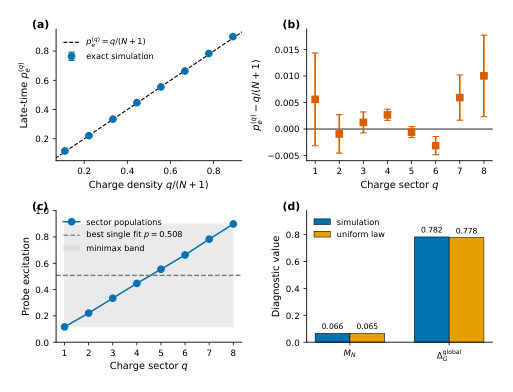
<figcaption class="paper-figure-caption"><b>Fig 2.</b> FIG. 2. Exact Hamiltonian benchmark for sector-memory obstruction. The N = 8 charge-conserving calculation uses Haar-random pure states over each complete total-charge sec- tor; its ensemble-averaged late-time probe population follows p(q) e ≃q/(N + 1). The sector-resolved probe states cannot be represented by one global Gibbs state: the best sector- independent population fit leaves a large minimax error, giv- ing ∆global G = 0.782.</figcaption>
</figure>
<figure class="paper-figure-card">

<figcaption class="paper-figure-caption"><b>Fig 3.</b> Figure 1 summarizes the operational structure of the test. In the Qiskit and IBM protocols, the probe qubit is initialized in |0⟩, the bath is initialized in a fixed ex- citation sector q, and the late-time or finite-depth probe population p(q) e is measured across sectors. The principal exact benchmark instead uses full-sector Haar-random pure states as specified in Eq. (28); the probe-fixed ex- act calculation is reported separately in the Supplemental Material (Figs. S1-S5). If the finite environment behaves as a single canonical bath for the probe, the values p(q) e should collapse to a sector-independent value. Persistent variation of p(q) e across q gives a nonzero sector-memory...</figcaption>
</figure>
<figure class="paper-figure-card">

<figcaption class="paper-figure-caption"><b>Fig 4.</b> FIG. 3. Hardware-compatible circuit validation. Ideal and transpiled circuit simulations reproduce the sector law p(q) e ≃ q/(N + 1). Simple noisy simulations identify N = 4 as the most robust hardware target: at depth d = 4, the noisy circuit gives ∆global G = 0.593, close to the ideal value 0.60, while retaining a visible charge-preservation signal.</figcaption>
</figure>
<figure class="paper-figure-card">

<figcaption class="paper-figure-caption"><b>Fig 5.</b> FIG. 4. IBM Fez observation of probe-level sector memory. The N = 4, d = 3, ϵ = 0 data show clear monotonic sector ordering and a large nonzero ∆global G . The N = 5, d = 6, ϵ = 0 data show that the effect survives at a larger bath size, although with stronger compression due to circuit depth and hardware noise. Raw and readout-mitigated analyses give the same qualitative conclusion.</figcaption>
</figure>
</div>

<p><strong>Summary.</strong> The paper investigates whether coupling a local probe qubit to a small, programmable bath can mimic the behavior of an infinite canonical bath. By measuring diagnostics like sector memory variance ($M_N$) and Gibbs-fit error ($\Delta_{	ext{global}}^G$), the authors show that finite environments only achieve local equilibration within conserved sectors, failing to erase preparation-dependent 'sector memory'.</p>
<p><strong>Why it may be interesting.</strong> This work provides a concrete, experimentally testable criterion for 'bath emergence' in engineered quantum systems, moving beyond idealized assumptions to address finite-size effects crucial for realistic open quantum system modeling.</p>
<details>
<summary>Detailed structure</summary>
<p><strong>Main problem.</strong> The study aims to distinguish if a finite quantum environment acts as a true canonical bath, which would lead to preparation-independent probe states, or if it only causes local equilibration within constrained sectors due to conservation laws.</p>
<p><strong>Main result.</strong> The authors conclude that equilibration within constrained sectors is insufficient to produce a single sector-independent Gibbs state, demonstrating a persistent 'sector memory' obstruction.</p>
<p><strong>Method.</strong> They use theoretical analysis of infinite-time averages combined with experimental implementation on superconducting qubits using charge-preserving Floquet circuits.</p>
<p><strong>Model / system.</strong> The system consists of a probe qubit coupled to a finite programmable bath of N qubits, governed by an excitation-number-conserving Hamiltonian. The dynamics are analyzed via sector-resolved time averaging.</p>
<p><strong>Key observables.</strong> Sector-memory variance ($M_N$) and Global Gibbs-fit error ($\Delta_{	ext{global}}^G$); these quantify the deviation from a single canonical state description across different charge sectors.</p>
<p><strong>Important parameters / regimes.</strong> The bath size (N), circuit depth, and symmetry-breaking strength ($\epsilon$) are key parameters varied in the analysis.</p>
<p><strong>Assumptions / limitations.</strong> The conclusion is operational and limited to finite circuit depths; the diagnostics rely on analyzing time averages within conserved charge sectors.</p>
<p><strong>Figures summary.</strong> Figures illustrate paired symmetry-breaking scans showing how perturbations reduce diagnostic errors but fail to eliminate sector ordering, confirming persistent memory effects.</p>
<p><strong>Paper structure.</strong> The paper establishes the theoretical framework using conserved charges and defines diagnostics ($M_N$, $\Delta_{	ext{global}}^G$). It then presents exact simulations and validates these concepts on an IBM Fez hardware platform through controlled circuit implementations and disorder scans.</p>
</details>
<details>
<summary>Abstract</summary>
<p>Finite quantum environments can relax local probes without acting as canonical baths. We study this distinction for a probe qubit coupled to a programmable bath of ($N$) qubits under excitation-number-conserving dynamics. The conserved charge partitions the Hilbert space into sectors. We characterize probe-level bath emergence using the sector-resolved late-time population ($p_e^{(q)}$), the sector-memory variance ($M_N$), and a global Gibbs-fit error ($Δ_G^{\mathrm{global}}$). Exact simulations with Haar-random pure states in each complete fixed-charge sector yield sector-dependent populations close to the maximally mixed-sector benchmark ($p_e^{(q)}=q/(N+1)$), producing a nonzero Gibbs obstruction. We then construct charge-preserving Floquet circuits using ($R_z$) phases and ($XX+YY$) exchange gates, validate them with ideal and noisy Qiskit simulations, and implement finite-depth experiments on IBM Fez. For ($N=4$) and ($ε=0$), the hardware data give ($M_N \simeq 0.044$), ($Δ_G^{\mathrm{global}} \simeq 0.558$), and charge preservation near 0.90 after readout mitigation. A paired symmetry-breaking scan using bath ($R_x(ε)$) rotations reduces both diagnostics while increasing charge leakage, but does not erase sector ordering over the accessible depths. These results show that equilibration within constrained sectors is insufficient to produce a single sector-independent Gibbs state for the probe.</p>
</details>
<p><sub><a href="#top">↑ back to top</a></sub></p>

<p><a id="paper-2607.05361"></a></p>
<h3 id="coherent-control-of-energy-transport-at-room-temperature-in-a-noisy-bath"><a href="http://arxiv.org/abs/2607.05361v1">Coherent Control of Energy Transport at Room Temperature in a Noisy Bath</a></h3>
<p><strong>Authors:</strong> Davinder Singh, Paul Brumer<br>
<strong>Type:</strong> theory · <strong>Category:</strong> statistical mechanics · <strong>PDF:</strong> <a href="https://arxiv.org/pdf/2607.05361v1">https://arxiv.org/pdf/2607.05361v1</a><br>
<strong>Analysis basis:</strong> full PDF text, analyzed in chunks
<strong>Topic relevance:</strong> 🔥 <code>methods for driven-dissipative</code> <strong>4/5</strong> · 🔥 <code>non-equilibrium dynamics</code> <strong>4/5</strong> · <code>correlated / nonlocal dissipation</code> <strong>3/5</strong> · <code>driven-dissipative phase transition</code> <strong>3/5</strong> · <code>interference shaping light</code> <strong>3/5</strong> · <code>non-equilibrium universality</code> <strong>2/5</strong> · <code>Keldysh / 2PI / non-Gaussian methods</code> <strong>1/5</strong> · <code>Tavis-Cummings &amp; cavity-many-emitter</code> <strong>1/5</strong></p>
<div class="figure-strip-hint">↔ Scroll figures horizontally</div>
<div class="paper-figures-scroll">
<figure class="paper-figure-card">
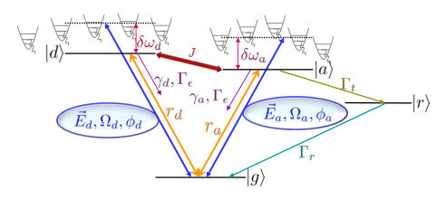
<figcaption class="paper-figure-caption"><b>Fig 1.</b> Figure 1: Schematic of a reaction center connected donor-acceptor pair (with quantum states, common ground state |g⟩, excited donor (acceptor) state |d⟩(|a⟩), and reaction center state |r⟩) in the presence of monochromatic control fields ⃗Em (where m = d, a). Here, δωm = ωL −ωmg is the detuning of the monochromatic field, rm illustrates the incoherent pumping rate, γm denotes the spontaneous decay rate, and Γt(Γr) represents the trapping (recycling) rate.</figcaption>
</figure>
<figure class="paper-figure-card">

<figcaption class="paper-figure-caption"><b>Fig 2.</b> Figure 2: Illustration of (i) flux and (ii) interference pattern as a function of the relative phase between laser beams and the Coulomb coupling J (a) in the absence [or presence (b)] of |g⟩→|a⟩coherent beam. The coherent beam for transition |g⟩→|d⟩is on in both cases. Further, inset for b(i) shows the dependence of the flux (upper panel) on the donor population (lower panel) for J = 2π × 2 cm−1. Inset: for b(ii) depicts the interference pathways when both the laser beams are switched on. Note that for computational purposes, NESS solutions and hence the flux F is rescaled with respect to a normalization parameter γ = 2π × 10−3 cm−1.</figcaption>
</figure>
<figure class="paper-figure-card">

<figcaption class="paper-figure-caption"><b>Fig 3.</b> Figure 3: (a) Flux as a function of ϕ and J with different values of coherent source intensity. (b) Flux as a function of ϕ and coherent source intensity. (c) Flux as a function of ϕ and incoherent source intensity. Here, we have used J = 2π × 10 cm−1 in the simulation of (b)&amp;(c).</figcaption>
</figure>
<figure class="paper-figure-card">

<figcaption class="paper-figure-caption"><b>Fig 4.</b> Figure 4: (a) The effect of the system phonon bath coupling on flux for the different values of relative phase. (b) Evaluation of flux for the asymmetric donor-pair acceptor, i.e., δωda = ωd −ωa ̸= 0 as a function of ϕ. In this case, two laser beams are considered such that laser beam for |g⟩→|d⟩transition remains resonant, while laser beam for |g⟩→|a⟩transition becomes off-resonant with δωda ̸= 0. Here, we have used J = 2π × 10 cm−1.</figcaption>
</figure>
<figure class="paper-figure-card">
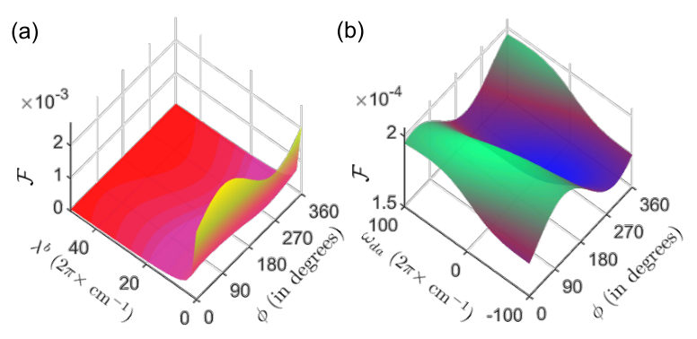
<figcaption class="paper-figure-caption"><b>Fig 5.</b> Fig.4(b)], indicating the persistence of interference in the presence of the energetic mismatch.</figcaption>
</figure>
</div>

<p><strong>Summary.</strong> The paper proposes using coherent laser fields to actively control the rate of energy transfer between donor and acceptor molecules in a system immersed in thermal noise. By exploiting quantum interference effects, researchers demonstrate that the energy flux can be switched or enhanced simply by tuning the relative phase of the driving lasers, proving robust control in a realistic, dissipative environment.</p>
<p><strong>Why it may be interesting.</strong> This work is highly relevant as it extends quantum control concepts from idealized transient dynamics into realistic, noisy, non-equilibrium steady states characteristic of biological energy conversion processes at ambient temperatures.</p>
<details>
<summary>Detailed structure</summary>
<p><strong>Main problem.</strong> The research addresses the coherent control of energy transport within a non-equilibrium steady state (NESS) in a system coupled to a noisy, dissipative environment at room temperature.</p>
<p><strong>Main result.</strong> Coherent excitation can induce interference between energy transfer pathways, allowing for phase-dependent modulation—acting as an optical energy switch—even when the system is operating in a highly dissipative regime.</p>
<p><strong>Method.</strong> The analysis involves solving the master equation to find the NESS, utilizing theoretical frameworks like the Redfield and Lindblad approaches to model open quantum dynamics.</p>
<p><strong>Model / system.</strong> The model is a minimal donor-acceptor pair connected to a reaction center, treated as an open quantum system interacting with both incoherent radiation (pumping) and a phonon bath. The evolution is governed by a master equation incorporating various coupling terms.</p>
<p><strong>Key observables.</strong> Energy flux ($F$) between the donor and acceptor sites; Donor-acceptor coherence ($    ilde{
ho}_{ad}$).</p>
<p><strong>Important parameters / regimes.</strong> Relative phase ($\phi$) of coherent fields, bath temperature (300 K), reorganization energy ($\lambda_b$), and coupling ratios ($\Omega/J(\Gamma)$).</p>
<p><strong>Assumptions / limitations.</strong> The analysis relies on the Markovian approximation and weak system-bath coupling. For NESS calculations, analytical solutions are often intractable, necessitating numerical methods.</p>
<p><strong>Figures summary.</strong> Figures illustrate flux modulation as a function of relative phase ($\phi$) for different pumping conditions, and show how the calculated flux depends on the ratio between coherent field strength ($\Omega$) and bath spectral density ($J(\Gamma)$).</p>
<p><strong>Paper structure.</strong> The paper progresses from defining the full Hamiltonian and master equation to deriving simplified Liouvillians (system-bath and system-radiation) under approximations. It then analyzes the steady-state flux in different coupling regimes, culminating in demonstrating phase control.</p>
</details>
<details>
<summary>Abstract</summary>
<p>Coherent control of energy transport in a non-equilibrium steady-state (NESS) in a reaction-center-connected donor-acceptor pair is proposed. The pigments are considered to be continuously interacting with incoherent radiation and a phonon bath while being driven by phase-controlled coherent fields. Coherent excitation of the donor-acceptor pair is shown to induce interference between excitation pathways, resulting in phase dependent modulation of the flux. As a consequence one can enhance or suppress energy transfer via interference, e.g. an optical energy switch. The persistence of such interference enables coherent control at a NESS in dissipative regime suggests an extension of the operational scope of quantum control from traditional transient domain with low dissiaption to noisy environment NESS at room temperature.</p>
</details>
<p><sub><a href="#top">↑ back to top</a></sub></p>

<p><a id="paper-2607.04090"></a></p>
<h3 id="controlling-atom-array-in-an-ultra-high-cooperativity-optical-cavity"><a href="http://arxiv.org/abs/2607.04090v1">Controlling Atom Array in an Ultra-high-cooperativity Optical Cavity</a></h3>
<p><strong>Authors:</strong> Jilai Ye, Zhihao Chi, Ye Tian, Shuyao Mei, Xiaoyu Li, Wenjun Zhang, Yajuan Zhao, Jiazhong Hu, Wenlan Chen<br>
<strong>Type:</strong> experiment · <strong>Category:</strong> other · <strong>PDF:</strong> <a href="https://arxiv.org/pdf/2607.04090v1">https://arxiv.org/pdf/2607.04090v1</a><br>
<strong>Analysis basis:</strong> full PDF text, analyzed in chunks
<strong>Topic relevance:</strong> 🔥 <code>Tavis-Cummings &amp; cavity-many-emitter</code> <strong>4/5</strong> · 🔥 <code>analog quantum simulation</code> <strong>4/5</strong> · <code>QC/QI experiment</code> <strong>3/5</strong> · <code>correlated cavity matter</code> <strong>3/5</strong> · <code>quantum optics experiment</code> <strong>3/5</strong> · <code>Rydberg arrays</code> <strong>1/5</strong> · <code>driven-dissipative phase transition</code> <strong>1/5</strong> · <code>entanglement &amp; information structure</code> <strong>1/5</strong> · <code>interference shaping light</code> <strong>1/5</strong></p>
<div class="figure-strip-hint">↔ Scroll figures horizontally</div>
<div class="paper-figures-scroll">
<figure class="paper-figure-card">

<figcaption class="paper-figure-caption"><b>Fig 1.</b> FIG. 2. Cavity characterization. (a) Transmission spec- trum of a 780 nm probe laser sweeping over one free spectral range (FSR) of the cavity. The frequency spacing between two adjacent fundamental transverse (TEM00) modes is the νFSR = 89.7 GHz, which gives a cavity length L = 1.67 mm. In the cavity mode labeling (q, m, n), q is the longitudinal mode index, m and n are the transverse mode indices. The frequency spacings between the TEM01 and TEM10 modes and TEM00 mode are 66.0 GHz and 66.5 GHz, respectively. The inset shows the transmission spectrum of TEM01 and TEM10. (b) Ring-down measurement of the cavity. This is achieved by rapidly sweeping the laser frequency across the resonance...</figcaption>
</figure>
<figure class="paper-figure-card">

<figcaption class="paper-figure-caption"><b>Fig 2.</b> FIG. 1. Integrated cavity-atom array platform. (a) The me- chanical design of the cavity assembly, in which two con- cave mirrors on top of the shear piezo actuators, and col- limation lenses are mounted on titanium structures. (b) Schematic of the optical tweezer array coupled to the cav- ity mode, with low-aberration viewport above them. The co- herent atom-cavity coupling rate g, cavity decay rate κ, and atomic linewidth Γ are indicated. (c) Fluorescence image of atoms loaded into tweezers overlapping with the cavity mode. In the present implementation, up to 21 individually trapped atoms can be rearranged and loaded into the cavity mode and coupled to the antinode of the cavity...</figcaption>
</figure>
<figure class="paper-figure-card">

<figcaption class="paper-figure-caption"><b>Fig 3.</b> FIG. 3. Atom-cavity transmission spectra. (a) Atomic transition used in the spectroscopy, 5S1/2|F = 2, mF = 2⟩→5P3/2|F ′ = 3, mF ′ = 3⟩of 87Rb. (b) Empty-cavity transmission spectrum. Here δ = ω −ωc is the frequency difference between the probe light ω and the cavity resonance ωc, and ∆= ωa −ωc is the atom-cavity detuning. The observed doublet arises from the fact that the two nearly orthogonal cavity polarization eigenmodes have slightly different resonance frequencies. (c)(d)(e)(f) Spectra for N=1,3,12,16 trapped atoms prepared at different tweezer sites inside the cavity mode; the similar line shapes indicate nearly uniform coupling for atoms positioned in the central region of the array....</figcaption>
</figure>
</div>

<p><strong>Summary.</strong> The research reports the creation of an integrated platform combining neutral-atom arrays with a high-finesse Fabry-Pérot cavity. By developing novel mirror fabrication techniques, they achieved strong single-atom coupling ($\eta_{	ext{cav}} \approx 125$) while maintaining the large mode volume necessary for trapping many atoms. This opens pathways for complex quantum simulations involving collective atomic interactions mediated by light.</p>
<p><strong>Why it may be interesting.</strong> This work directly addresses a major engineering hurdle in quantum simulation: creating large, controllable arrays of qubits (atoms) that are strongly coupled to high-quality optical cavities for advanced quantum state manipulation and entanglement generation.</p>
<details>
<summary>Detailed structure</summary>
<p><strong>Main problem.</strong> The challenge is integrating neutral-atom arrays, which offer scalable qubit architectures, with high-cooperativity optical cavities, which provide strong light-matter coupling.</p>
<p><strong>Main result.</strong> The authors successfully realized an integrated platform achieving a single-atom cooperativity of $\eta_{	ext{cav}}=125\pm13$ while maintaining large mode volume compatible with trapping up to 16 individual atoms.</p>
<p><strong>Method.</strong> They employed a two-step mirror fabrication process and characterized the system by measuring atom-cavity transmission spectra as the number of trapped atoms was varied.</p>
<p><strong>Model / system.</strong> The platform consists of an atomic array (e.g., Rb-87) coupled to a millimeter-scale Fabry-Pérot cavity, enabling controlled interaction between individual atoms and the cavity mode.</p>
<p><strong>Key observables.</strong> Single-atom cooperativity ($\eta_{	ext{cav}}$), effective spectroscopic cooperativity ($\eta_{	ext{spec}}$), and atom-cavity transmission spectra as a function of trapped atom number ($N$).</p>
<p><strong>Important parameters / regimes.</strong> High cooperativity regime ($\eta \approx 100$), millimeter-scale cavity size, sub-2 Å mirror roughness, and the ability to couple up to 16 atoms simultaneously.</p>
<p><strong>Assumptions / limitations.</strong> The difference between measured $\eta_{	ext{spec}}$ and theoretical $\eta_{	ext{cav}}$ is attributed to spatial spreading of atoms or placement errors within the lattice.</p>
<p><strong>Figures summary.</strong> Figure 3 shows atom-cavity transmission spectra, demonstrating the measurable spectroscopic cooperativity ($\eta_{	ext{spec}}$) for varying numbers of trapped atoms ($N=1$ through $N=16$).</p>
<p><strong>Paper structure.</strong> The paper first establishes the need to combine scalable atomic arrays with high-cooperativity cavities. It details the advanced hardware fabrication techniques, presents measurements confirming strong coupling ($\eta_{	ext{cav}}$), and finally demonstrates in-situ characterization by measuring $\eta_{	ext{spec}}$ across multiple trapped atoms.</p>
</details>
<details>
<summary>Abstract</summary>
<p>Neutral-atom array and cavity quantum electrodynamics offer complementary strengths for quantum science: scalable, reconfigurable qubit architectures and strong coherent light-matter coupling. Combining them in a single platform requires an optical cavity with simultaneously high cooperativity, sufficient mode volume to accommodate atom array, and ample side optical access for atom trapping, imaging, cooling, and rearrangement, a combination that is challenging to achieve. Here we realize an atomic array integrated with a millimeter-scale Fabry--Pérot cavity whose optically-characterized single-atom cooperativity reaches $η_{\mathrm{cav}}=125\pm13$. Atom-cavity transmission spectra of trapped atoms yield an effective spectroscopic cooperativity $η_{\mathrm{spec}}=112.3\pm3.3$, providing an in-situ verification of strong coupling in the integrated platform, and we demonstrate simultaneous coupling of up to 16 individually trapped atoms to the antinode of the cavity mode. The key technical advance is a two-step mirror-fabrication method combining precision mechanical shaping and carbon-dioxide laser polishing, which produces concave fused-silica mirrors with sub-millimeter radii of curvature and residual roughness below 2 Å. Our results establish a regime of cavity-integrated atomic array that simultaneously provides high cooperativity, large mode volume, and flexible manipulation of individual atoms, opening opportunities for cavity-assisted quantum state readout and long-range entanglement-engineering in atom-array platforms.</p>
</details>
<p><sub><a href="#top">↑ back to top</a></sub></p>

<p><a id="paper-2607.04721"></a></p>
<h3 id="mapping-open-quantum-dynamics-onto-graphs"><a href="http://arxiv.org/abs/2607.04721v1">Mapping open quantum dynamics onto graphs</a></h3>
<p><strong>Authors:</strong> Kyuho Kim, Dayeong Lee, Seungkyun Park, Xianji Piao, Namkyoo Park, Sunkyu Yu<br>
<strong>Type:</strong> theory · <strong>Category:</strong> other · <strong>PDF:</strong> <a href="https://arxiv.org/pdf/2607.04721v1">https://arxiv.org/pdf/2607.04721v1</a><br>
<strong>Analysis basis:</strong> full PDF text, analyzed in chunks
<strong>Topic relevance:</strong> 🔥 <code>methods for driven-dissipative</code> <strong>4/5</strong> · <code>correlated / nonlocal dissipation</code> <strong>3/5</strong> · <code>driven-dissipative phase transition</code> <strong>3/5</strong> · <code>Tavis-Cummings &amp; cavity-many-emitter</code> <strong>2/5</strong> · <code>non-equilibrium dynamics</code> <strong>2/5</strong> · <code>non-equilibrium universality</code> <strong>2/5</strong> · <code>Keldysh / 2PI / non-Gaussian methods</code> <strong>1/5</strong> · <code>Kondo &amp; dissipative impurity</code> <strong>1/5</strong> · <code>analog quantum simulation</code> <strong>1/5</strong> · <code>correlated cavity matter</code> <strong>1/5</strong> · <code>entanglement &amp; information structure</code> <strong>1/5</strong></p>
<div class="figure-strip-hint">↔ Scroll figures horizontally</div>
<div class="paper-figures-scroll">
<figure class="paper-figure-card">
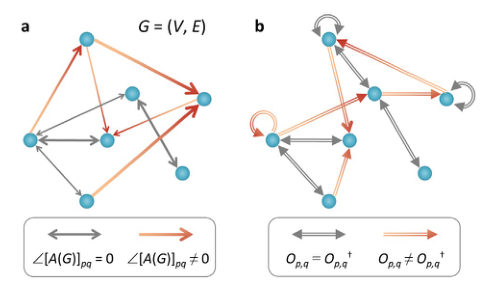
<figcaption class="paper-figure-caption"><b>Fig 1.</b> Fig. 1. Schrödinger operator graphs. a, Magnetic graph G = (V, E) with NG vertices, where</figcaption>
</figure>
<figure class="paper-figure-card">
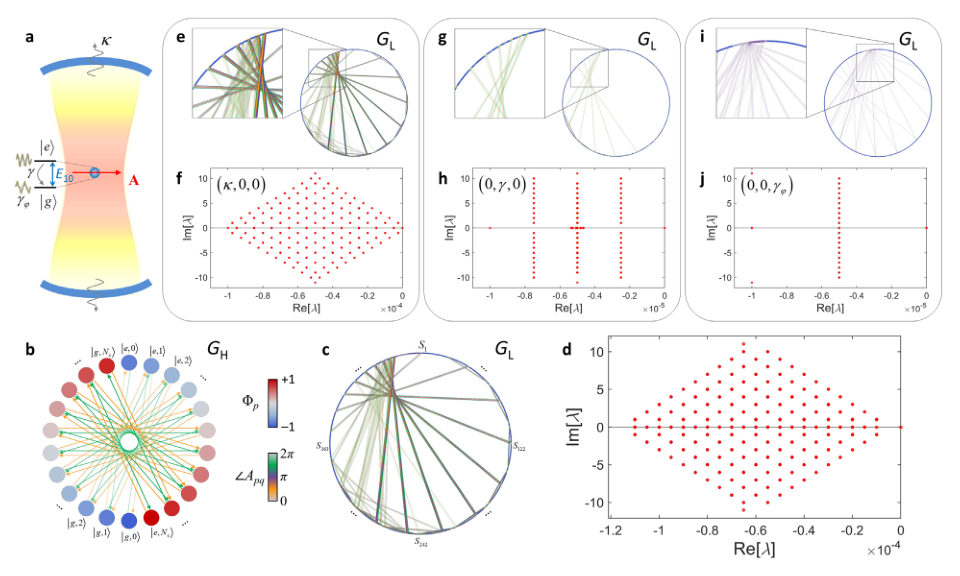
<figcaption class="paper-figure-caption"><b>Fig 2.</b> Fig. 2. Open quantum Rabi graphs. a, Schematic of the open QRM. b,c, GH (b) and GL (c) for</figcaption>
</figure>
<figure class="paper-figure-card">
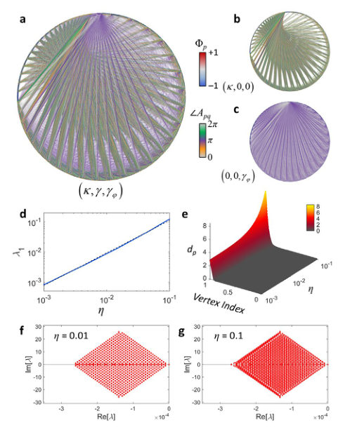
<figcaption class="paper-figure-caption"><b>Fig 3.</b> Fig. 3. USC open quantum Rabi graphs. a-c, GL for (κ, γ, γφ) = (10–5, 10–5, 10–5) (a), (10–5, 0, 0)</figcaption>
</figure>
<figure class="paper-figure-card">
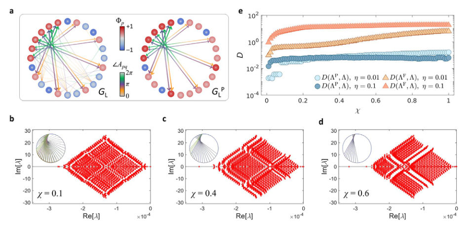
<figcaption class="paper-figure-caption"><b>Fig 4.</b> Fig. 4. Graph pruning. a, Schematic of graph pruning. b-d, Liouville spectra and the</figcaption>
</figure>
<figure class="paper-figure-card">

<figcaption class="paper-figure-caption"><b>Fig 5.</b> Fig. 5. Schrödinger-operator graph neural networks. a, Schematic of the GCN, where ‘HOP’</figcaption>
</figure>
</div>

<p><strong>Summary.</strong> The paper introduces a universal graph-theoretic framework to model open quantum dynamics by mapping the system's evolution onto two interconnected graphs. By applying this to the Open Quantum Rabi Model, the authors characterize how dissipation manifests as unique topological signatures within these graphs. This approach allows for efficient data-driven analysis and prediction of complex spectral properties using Graph Neural Networks.</p>
<p><strong>Why it may be interesting.</strong> This work provides a powerful, unifying mathematical language—graph theory—to analyze complex open quantum dynamics, bridging abstract topological concepts with concrete physical phenomena like dissipation and coupling regime transitions in cavity QED systems.</p>
<details>
<summary>Detailed structure</summary>
<p><strong>Main problem.</strong> To develop a universal graph-theoretic framework for mapping and analyzing both isolated and open quantum dynamics, specifically addressing the unexplored connectivity structure arising from system-bath coupling.</p>
<p><strong>Main result.</strong> The authors successfully map open quantum dynamics onto two distinct graphs ($G_H$ and $G_L$), providing a rigorous mathematical tool to characterize dissipation signatures and enabling data-driven analysis via graph neural networks.</p>
<p><strong>Method.</strong> The framework constructs Schrödinger operator graphs for the unitary part and uses a second graph derived from the Kossakowski matrix for the nonunitary (dissipative) evolution, allowing spectral analysis and machine learning prediction of Liouville spectra.</p>
<p><strong>Model / system.</strong> The study focuses on open quantum systems governed by Markovian dynamics, exemplified by the Open Quantum Rabi Model (QRM), which includes coupling strengths ($\kappa, \gamma, \gamma_\phi$) and dissipation parameters.</p>
<p><strong>Key observables.</strong> Liouville spectra ($\lambda$), graph-topological signatures of dissipation, Fiedler value ($\lambda_1$), and spectral distance measures like the Chamfer distance ($D$).</p>
<p><strong>Important parameters / regimes.</strong> Coupling strengths ($\kappa, \gamma, \gamma_\phi$), pruning thresholds ($\chi$), and system size parameters ($N_{max}$). The analysis covers weak-to-ultrastrong coupling (USC) transitions.</p>
<p><strong>Assumptions / limitations.</strong> The framework relies on using the first standard form of the Lindblad QME to ensure all degrees of freedom are encoded in the graph structures, and it compares graph pruning against matrix sparsification techniques.</p>
<p><strong>Figures summary.</strong> Figures illustrate the constructed Schrödinger operator graphs ($G_H$ and $G_L$) for the open QRM under various coupling regimes. They show spectral comparisons using Liouville spectra ($\lambda$), demonstrating that graph pruning preserves spectral features better than direct matrix pruning, and present GCN training results.</p>
<p><strong>Paper structure.</strong> The paper introduces the universal graph framework by defining two graphs ($G_H$ and $G_L$) representing unitary and nonunitary evolution. It applies this to the QRM, analyzing dissipation signatures and USC transitions using graph metrics. Finally, it develops and validates a Graph Convolutional Network (GCN) trained on these graph representations to predict the Liouville spectrum.</p>
</details>
<details>
<summary>Abstract</summary>
<p>Graph-theoretic frameworks have been widely employed in quantum physics to address the high-dimensional complexity of quantum systems. Although open quantum dynamics incorporates system-bath coupling via numerous interacting operators, it has been formulated algebraically with a partial set of jump operators or statistically universal reservoirs, leaving the underlying connectivity structure largely unexplored. Here, we propose a universal graph-theoretic framework for Markovian quantum dynamics. The framework maps open quantum dynamics onto two uniquely defined graphs, where the quantum master equation is rigorously interpreted as the average wave characteristic of operator-valued signals across the graphs. Applying this framework to the open quantum Rabi model, we demonstrate an open-system generalization of Fock-state lattices, characterize graph-topological signatures of dissipation, and classify the weak-to-ultrastrong coupling transition. Building on these representations, graph pruning reveals the backbone of open quantum dynamics, which enables superior graph neural-network learning. Our results bridge graph theory and open quantum dynamics, achieving efficient data-driven analysis of high-dimensional complexity.</p>
</details>
<p><sub><a href="#top">↑ back to top</a></sub></p>

<p><a id="paper-2607.04080"></a></p>
<h3 id="coherent-quantum-control-of-dark-excitons-in-hybrid-metal-organic-chalchogenolates"><a href="http://arxiv.org/abs/2607.04080v1">Coherent quantum control of dark excitons in hybrid metal organic chalchogenolates</a></h3>
<p><strong>Authors:</strong> Christian L. McCoy, Tobias Saule, Mariya Aleksich, Maggie C. Willson, J. Nathan Hohman, Thomas Weinacht, George N. Gibson, Carlos A. Trallero-Herrero<br>
<strong>Type:</strong> both · <strong>Category:</strong> quantum information and computing · <strong>PDF:</strong> <a href="https://arxiv.org/pdf/2607.04080v1">https://arxiv.org/pdf/2607.04080v1</a><br>
<strong>Analysis basis:</strong> full PDF text, analyzed in chunks
<strong>Topic relevance:</strong> 🔥 <code>QC/QI experiment</code> <strong>4/5</strong> · <code>interference shaping light</code> <strong>3/5</strong> · <code>quantum optics experiment</code> <strong>3/5</strong> · <code>analog quantum simulation</code> <strong>2/5</strong> · <code>non-equilibrium dynamics</code> <strong>2/5</strong> · <code>Keldysh / 2PI / non-Gaussian methods</code> <strong>1/5</strong> · <code>correlated / nonlocal dissipation</code> <strong>1/5</strong> · <code>driven-dissipative phase transition</code> <strong>1/5</strong> · <code>entanglement &amp; information structure</code> <strong>1/5</strong> · <code>methods for driven-dissipative</code> <strong>1/5</strong> · <code>quantum measurements</code> <strong>1/5</strong></p>
<div class="figure-strip-hint">↔ Scroll figures horizontally</div>
<div class="paper-figures-scroll">
<figure class="paper-figure-card">
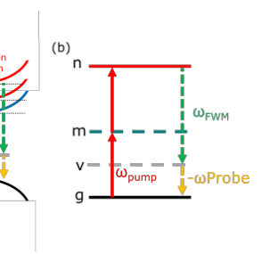
<figcaption class="paper-figure-caption"><b>Fig 1.</b> Fig. 1: (a.) Excitonic state representation of mithrene, single photon allowed transi- tions in blue (left). Two photon allowed transitions in red (right). (b.) State diagram of a χ(3) process. Formalism and nomenclature from Eq. 1 and Ref. [25]. In the case of mithrene the only real n-states are the dark exciton states, A2p and B2p.</figcaption>
</figure>
<figure class="paper-figure-card">

<figcaption class="paper-figure-caption"><b>Fig 2.</b> Fig. 2: (a.) General experimental apparatus design used for all experiments. Pump pulses are are from a Ti:Sapphire laser and split between an OPA and pulse shaper. The resulting pulses are recombined and focused onto a sample of mithrene before the resulting emission is collected. Inset. Cartoon crystal structure of mithrene. Silver ball - Ag, Orange ball - Se, Blue hexagon/ball - phenyl ring (C6H5) (b.) Comparison of the FWM (black) brightness response in mithrene to the SFG (orange) brightness in BBO, both as a function of optical path length delay.</figcaption>
</figure>
<figure class="paper-figure-card">
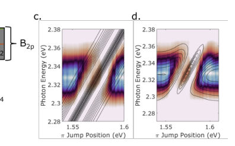
<figcaption class="paper-figure-caption"><b>Fig 3.</b> Fig. 3: (a.) Two-dimensional heat map of the FWM emission as a function of the π phase jump position. Constructive interference as a result of the B2p resonance can be seen at ∼1.575 eV. (b.) Illustration of the phase delay scanning through the pump spectrum, leading to constructive interference for the entire width of the B2p resonance. (c.) B2p state population resulting from second-order perturbative treatment of the Hamiltonian, Eq. 2, overlayed over the heat map from (a.). (d.) Best theoretical agreement from a multidimensional scan of the integrated TDSE using the Hamiltonian from Eq. 2 compared to the heat map from (a.). Extracted material properties that fit the best for I0 = 2.88 ·...</figcaption>
</figure>
<figure class="paper-figure-card">
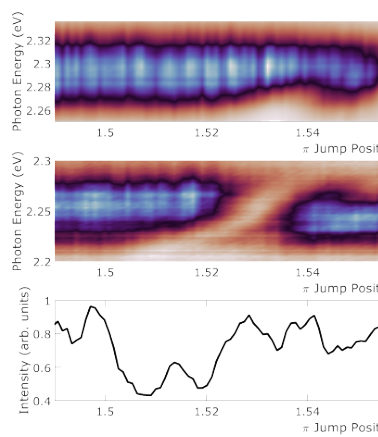
<figcaption class="paper-figure-caption"><b>Fig 4.</b> Fig. 4: (a.) λcenter = 1.56 eV (b.). λcenter = 1.53 eV. (c.) Lineout of the emission centered at 2.19 eV.</figcaption>
</figure>
<figure class="paper-figure-card">

<figcaption class="paper-figure-caption"><b>Fig 5.</b> Fig. 5: (a) Zoom in of the histogram for all simulated RMS values. (b) experimental π jump data. Solid and dashed circle mark regions of interest, see text. (c)(d) Simulation result for an ωB2p of -54.9 Trad/s (RMS of 0.092) and +54.9 Trad/s (RMS of 0.102) overlayed with the experimental data respectively. The rest of the material properties is kept constant.</figcaption>
</figure>
</div>

<p><strong>Summary.</strong> The research demonstrates coherent quantum control of dark excitons—optically forbidden excited states—in MOChas at room temperature. By employing ultrafast pulse shaping and probing the system via Four-Wave Mixing, the authors show they can manipulate these states using a derived Hamiltonian model. This work establishes a solid-state platform for realizing fundamental quantum gate operations.</p>
<p><strong>Why it may be interesting.</strong> This work directly bridges solid-state physics with quantum information science by showing how engineered excitonic states in organic semiconductors can be manipulated coherently using tailored light fields, mimicking atomic quantum control schemes.</p>
<details>
<summary>Detailed structure</summary>
<p><strong>Main problem.</strong> The goal is to demonstrate coherent quantum control over dark exciton states within Metal-Organic Chalcogenolates (MOChas) for use in next-generation quantum processing platforms.</p>
<p><strong>Main result.</strong> Coherent control was successfully demonstrated using ultrafast pulse shaping at room temperature, confirming the feasibility of using these solid-state systems for implementing basic quantum gate operations.</p>
<p><strong>Method.</strong> The study combines theoretical modeling using a non-perturbative Hamiltonian with experimental techniques like Four-Wave Mixing (FWM) and ultrafast pulse shaping.</p>
<p><strong>Model / system.</strong> The physical system is dark excitons in MOChas, modeled by a three-level system described by a two-photon Hamiltonian. The control mechanism relies on tailoring the spectral phase of an ultrafast laser pulse to manipulate state populations.</p>
<p><strong>Key observables.</strong> FWM emission energy, which reveals resonance structure; the achievable quantum gate operations (e.g., $\pi/2$ rotation) characterized by pulse areas ($    heta$).</p>
<p><strong>Important parameters / regimes.</strong> Room temperature operation, two-photon absorption access, and the ability to tune detuning ($\delta(t)$) relative to coupling strengths ($\chi(t)$).</p>
<p><strong>Assumptions / limitations.</strong> The initial theoretical description is limited to the perturbative regime, and the model simplifies by neglecting certain state couplings.</p>
<p><strong>Figures summary.</strong> Figures illustrate the excitonic state diagram (single-photon vs. two-photon allowed), the FWM experimental setup using a pulse shaper, and energy maps showing resonance features dependent on phase jumps.</p>
<p><strong>Paper structure.</strong> The paper progresses from establishing the physical system and its limitations to developing a Hamiltonian description, demonstrating control via ultrafast spectroscopy measurements (FWM scans), and finally outlining the theoretical requirements for implementing quantum gates.</p>
</details>
<details>
<summary>Abstract</summary>
<p>Artificial atom-like systems are a promising candidate for next generation quantum processing. Among them, dark excitons exhibit one of the longest lifetimes at high temperatures. Here, we demonstrate coherent control of dark excitonic states in metal-organic chalcogenolates (MOChas) by using an ultrafast pulse shaper at room temperature. These dark exciton states are optically accessed via two-photon absorption and directly read out with a four-wave mixing process. The system is described by a non-perturbative, two-photon Hamiltonian based on well-known atomic physics and applied to a three level system comprised of two dark excitons. Empirical and theoretical state specific optical access is shown via a simple optical pulse shape. The developed Hamiltonian-based description is a first step towards a quantum processing platform using three-level systems and two photon transitions, one example being dark excitons in the MOCha silver benzeneselenolate (mithrene). Simple conditions for gate operations are laid out and described.</p>
</details>
<p><sub><a href="#top">↑ back to top</a></sub></p>

<p><a id="paper-2607.03779"></a></p>
<h3 id="gorini-kossakowski-sudarshan-lindblad-equation-in-different-bases-application-to-driven-dissipative-two-and-multilevel-systems"><a href="http://arxiv.org/abs/2607.03779v1">Gorini-Kossakowski-Sudarshan-Lindblad equation in different bases: application to driven-dissipative two- and multilevel systems</a></h3>
<p><strong>Authors:</strong> O. A. Ilinskaya, O. V. Ivakhnenko, A. I. Ryzhov, O. Yu. Kitsenko, S. N. Shevchenko<br>
<strong>Type:</strong> theory · <strong>Category:</strong> other · <strong>PDF:</strong> <a href="https://arxiv.org/pdf/2607.03779v1">https://arxiv.org/pdf/2607.03779v1</a><br>
<strong>Analysis basis:</strong> full PDF text, analyzed in chunks
<strong>Topic relevance:</strong> 🔥 <code>methods for driven-dissipative</code> <strong>4/5</strong> · <code>driven-dissipative phase transition</code> <strong>3/5</strong> · <code>non-equilibrium dynamics</code> <strong>3/5</strong> · <code>Keldysh / 2PI / non-Gaussian methods</code> <strong>2/5</strong> · <code>Tavis-Cummings &amp; cavity-many-emitter</code> <strong>2/5</strong> · <code>non-equilibrium universality</code> <strong>2/5</strong> · <code>analog quantum simulation</code> <strong>1/5</strong> · <code>correlated / nonlocal dissipation</code> <strong>1/5</strong> · <code>correlated cavity matter</code> <strong>1/5</strong> · <code>quantum measurements</code> <strong>1/5</strong></p>
<div class="figure-strip-hint">↔ Scroll figures horizontally</div>
<div class="paper-figures-scroll">
<figure class="paper-figure-card">
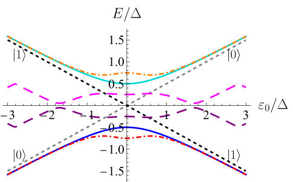
<figcaption class="paper-figure-caption"><b>Fig 1.</b> FIG. 1. The energy levels of a qubit as functions of the en- ergy detuning ε0 (both in the units of the energy gap ∆) in different bases: the diabatic basis (the black and gray dashed lines), the instantaneous eigenbasis (the blue and cyan solid curves), the first superadiabatic basis (the red and orange dot-dashed curves), and the Floquet basis (the purple and magenta long-dashed curves). The labels |0⟩and |1⟩at the corners denote the diabatic eigenstates corresponding to the respective diabatic energy levels. The moment of time is fixed: t0 = π/2ω, other parameters are as follows: the excitation amplitude A = ∆, the driving frequency ℏω = ∆(then, the parameter in Eq. (20) is a = 1). For...</figcaption>
</figure>
<figure class="paper-figure-card">
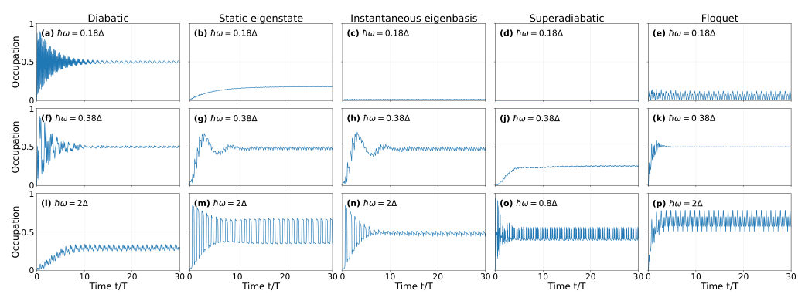
<figcaption class="paper-figure-caption"><b>Fig 2.</b> FIG. 2. Comparison of the dynamics of the upper energy level occupation probability for different driving frequencies ℏω = 0.18 ∆, 0.38 ∆, 2 ∆(the three rows) in different bases (the five columns), with high relaxation and decoherence rates Γ1 = 0.15∆/ℏ, Γ2 = 0.175∆/ℏ. The horizontal axes show the time in periods of the driving signal T = 2π/ω. The energy detuning is ε0 = 0.96 ℏω, the driving amplitude is A = 4.02 ℏω. We note a lower value of the driving frequency in panel (o), ℏω = 0.8 ∆, compared to other panels in the third row. The reason is that the superadiabatic basis is inapplicable in the nonadiabatic regime. The parameter a, see Eq. (20), is approximately 0.13 for the first row,...</figcaption>
</figure>
<figure class="paper-figure-card">

<figcaption class="paper-figure-caption"><b>Fig 3.</b> FIG. 3. Comparison of the interferograms (the time-averaged upper-level qubit occupation probability as a function of the energy detuning ε0 and the driving amplitude A) for different driving frequencies ℏω = 0.18 ∆, 0.38 ∆, 2 ∆(the three rows) in different bases (the five columns), with moderate relaxation and decoherence rates Γ1 = 0.03∆/ℏ, Γ2 = 0.035∆/ℏ. We note a lower value of the driving frequency in panel (o), ℏω = ∆, compared to other panels in the third row. The reason is that the superadiabatic basis is inapplicable in the nonadiabatic regime. The first column: (a,f,l) the interferograms in the diabatic basis (6), which show the cleanest results in the case of fast nonadiabatic...</figcaption>
</figure>
<figure class="paper-figure-card">
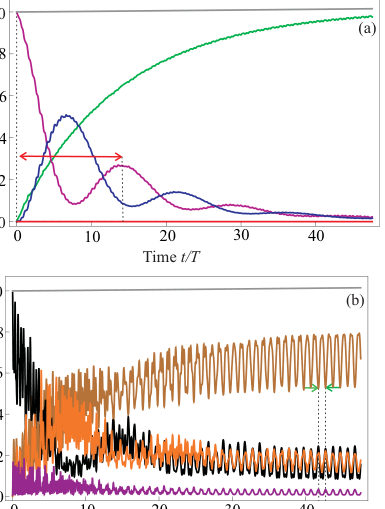
<figcaption class="paper-figure-caption"><b>Fig 4.</b> FIG. 4. Dynamics for two driven qubits in different bases with relaxation and decoherence taken into account. The ab- scissa axes show time in units of the driving period T = 2π/ω. The driving frequency is resonant with the two eigenstates at t = 0: ℏω = E3(0) −E2(0). (a) Dynamics in the instanta- neous basis. The initial condition is as follows: ρ22(0) = 1, with other matrix elements being equal to zero. (b) Dy- namics in the diabatic basis. The initial condition is as fol- lows: ρ(d) 22 (0) = 1, with other matrix elements being equal to zero. Both panels show Rabi-like oscillations. The driv- ing period and the Rabi period are the same for both panels, and the Rabi period is shown by the...</figcaption>
</figure>
</div>

<p><strong>Summary.</strong> This paper provides a comprehensive theoretical review of describing driven-dissipative quantum systems using the GKSL master equation. It argues that the choice of basis (e.g., diabatic vs. instantaneous eigenbasis) is critical, as it dictates the correct mathematical form of the evolution equations. By analyzing multiple bases for qubit and qudit systems, the authors provide necessary guidelines for theorists modeling complex open quantum dynamics.</p>
<p><strong>Why it may be interesting.</strong> This work is highly relevant as it tackles a fundamental theoretical challenge: ensuring that the mathematical description of open quantum dynamics remains physically consistent regardless of the chosen computational basis, which is crucial for accurate modeling in quantum optics and superconducting circuits.</p>
<details>
<summary>Detailed structure</summary>
<p><strong>Main problem.</strong> The core problem is determining the correct mathematical basis for formulating the Gorini-Kossakowski-Sudarshan-Lindblad (GKSL) master equation when describing driven-dissipative quantum systems.</p>
<p><strong>Main result.</strong> The choice of basis—such as diabatic, instantaneous eigenbasis, or Floquet basis—fundamentally dictates the correct form of the master equation and its associated Hamiltonian terms, especially near avoided crossings.</p>
<p><strong>Method.</strong> The authors analyze the GKSL equation by transforming operators and Hamiltonians between various bases (e.g., using transfer matrices) to ensure physical consistency across different dynamical regimes.</p>
<p><strong>Model / system.</strong> The study focuses on driven-dissipative two- and multilevel quantum systems, exemplified initially by a qubit governed by a time-dependent Hamiltonian $H(t)$. The dynamics are described by the GKSL master equation.</p>
<p><strong>Key observables.</strong> Dynamics of the density matrix $
ho$, stationary states (interferograms), and transition probabilities related to Landau-Zener tunneling.</p>
<p><strong>Important parameters / regimes.</strong> Driving parameters ($\Delta, \epsilon(t)$), relaxation rates ($\Gamma_1, \Gamma_\phi$), and adiabaticity parameters ($\delta$).</p>
<p><strong>Assumptions / limitations.</strong> The analysis relies on the Born, Markov, and secular approximations for deriving the master equation, and specific assumptions are made regarding the validity of basis transformations in different limits.</p>
<p><strong>Figures summary.</strong> Figure 1 illustrates energy level diagrams (diabatic, instantaneous, superadiabatic, Floquet) as a function of detuning $\epsilon_0$, while Table I summarizes properties of these various bases.</p>
<p><strong>Paper structure.</strong> The paper systematically revisits the GKSL equation derivation, analyzes its application to time-dependent Hamiltonians in multiple bases (diabatic vs. instantaneous), and discusses advanced techniques like superadiabatic and Floquet formulations for periodically driven systems.</p>
</details>
<details>
<summary>Abstract</summary>
<p>An open quantum system can be described by a master equation, of which one of the most popular is the Gorini-Kossakowski-Sudarshan-Lindblad (GKSL) equation. We revisit description of driven-dissipative quantum systems focusing on the appropriate choice of the system's basis and the respective transformations. We consider the GKSL equation in different bases and calculate the dynamics for a qubit and for a qudit. An appropriate choice of the basis is a fundamental problem for theoretical consideration of open quantum systems and provides an opportunity to obtain the desired evolution in practice.</p>
</details>
<p><sub><a href="#top">↑ back to top</a></sub></p>

<p><a id="paper-2607.04161"></a></p>
<h3 id="emergent-fermi-polarons-in-dirac-materials"><a href="http://arxiv.org/abs/2607.04161v1">Emergent Fermi polarons in Dirac materials</a></h3>
<p><strong>Authors:</strong> Xin Chen, Eugen Dizer, Rafał Ołdziejewski, Kostya S. Novoselov, Marton Kanász-Nagy, Richard Schmidt<br>
<strong>Type:</strong> theory · <strong>Category:</strong> other · <strong>PDF:</strong> <a href="https://arxiv.org/pdf/2607.04161v1">https://arxiv.org/pdf/2607.04161v1</a><br>
<strong>Analysis basis:</strong> full PDF text, analyzed in chunks
<strong>Topic relevance:</strong> 🔥 <code>Keldysh / 2PI / non-Gaussian methods</code> <strong>4/5</strong> · 🔥 <code>analog quantum simulation</code> <strong>4/5</strong> · <code>Kondo &amp; dissipative impurity</code> <strong>3/5</strong> · <code>methods for driven-dissipative</code> <strong>3/5</strong> · <code>non-equilibrium dynamics</code> <strong>2/5</strong> · <code>correlated / nonlocal dissipation</code> <strong>1/5</strong> · <code>correlated cavity matter</code> <strong>1/5</strong> · <code>driven-dissipative phase transition</code> <strong>1/5</strong></p>
<div class="figure-strip-hint">↔ Scroll figures horizontally</div>
<div class="paper-figures-scroll">
<figure class="paper-figure-card">

<figcaption class="paper-figure-caption"><b>Fig 1.</b> FIG. 1. Setup and physical regimes. Massless Dirac regime (gray box): a Schematic realization, where majority fermions (red) and impurities (blue) populate a honeycomb lattice with hopping amplitudes t and tI, respectively, and interact via an on-site potential U. b Three-dimensional honeycomb band structure featuring two inequivalent Dirac points K and K′ at the corners of the Brillouin zone. c Zoom into the linear Dirac cone with the corresponding gapless DOS (bottom), vanishing at the charge-neutrality point. The arrow illustrates the particle-hole excitation responsible for the emergence of the Dirac-Fermi polaron (DFP). Massive Dirac regime (blue box): d Massive Dirac cone with gap...</figcaption>
</figure>
<figure class="paper-figure-card">

<figcaption class="paper-figure-caption"><b>Fig 2.</b> FIG. 2. a,b Absorption spectrum of a static impurity (tI = 0) in the massless Dirac regime for attractive (U/t = −5) and repulsive (U/t = 5) interactions, calculated via the functional determinant approach (FDA). In addition to the conventional attractive polaron (AP) and repulsive polaron (RP) branches, Dirac-Fermi polaron (DFP) resonances are visible. The symmetry between panels a and b reflects the particle-hole symmetry of the honeycomb band structure. c The corresponding spectrum of a static impurity for attractive interactions obtained from the variational Chevy ansatz, Eq. (4). Vertical dotted and solid lines mark the Dirac point (DP) and van Hove singularities (VHS), respectively,...</figcaption>
</figure>
<figure class="paper-figure-card">
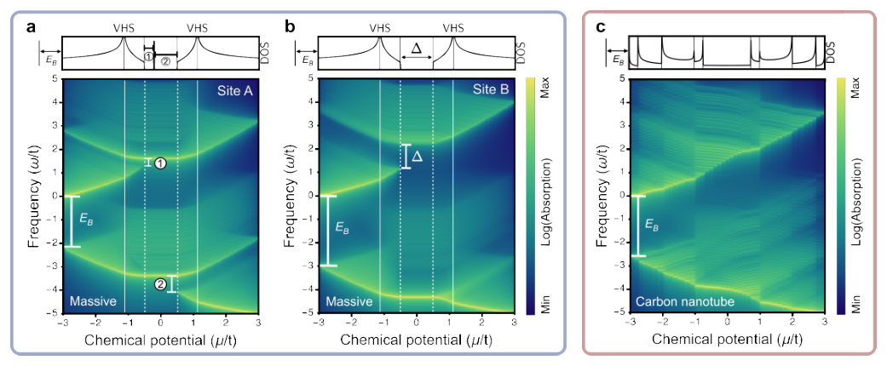
<figcaption class="paper-figure-caption"><b>Fig 3.</b> FIG. 3. Absorption spectrum of a static impurity (tI = 0) for attractive interactions (U/t = −5). a,b Massive Dirac regime (blue box, ∆= t): FDA spectra for the impurity located at sublattice site A and B, with the schematic interacting DOS shown above each panel indicating bound state energies and band edges. The separation between the attractive and repulsive polaron branches is set by the bound state energy EB. The distances from the in-gap bound state to the lower and upper band edges are marked by 1 and 2, respectively. For site A, the in-gap state resides near the centre of the gap, giving rise to two distinct spectral gaps. In contrast, for an impurity at site B, no in-gap state is...</figcaption>
</figure>
<figure class="paper-figure-card">

<figcaption class="paper-figure-caption"><b>Fig 4.</b> FIG. 1. The honeycomb lattice is constructed with lattice vectors a1 = √</figcaption>
</figure>
<figure class="paper-figure-card">

<figcaption class="paper-figure-caption"><b>Fig 5.</b> FIG. 2. FDA absorption spectra for an interaction strength of U = −5 t with periodic boundary conditions. a–c Spectra at zero temperature (T = 0) for progressively larger lattice sizes: a 9 × 9, b 18 × 18, and c 30 × 30. d The corresponding finite-temperature absorption spectrum evaluated at T = 0.2 t on a 24 × 24 lattice.</figcaption>
</figure>
</div>

<p><strong>Summary.</strong> This theoretical work characterizes the Dirac-Fermi Polaron (DFP), a unique quasiparticle formed when impurities interact with excitations near the Dirac point of materials like graphene. By calculating spectral functions and self-energies, the authors demonstrate that polaron spectroscopy provides a powerful tool to probe band structure effects beyond conventional measurements. The DFP is shown to be robust across various interaction strengths and doping levels.</p>
<p><strong>Why it may be interesting.</strong> The focus on spectral signatures accessible in both solid-state (graphene) and ultracold atomic platforms makes this highly relevant for experimental quantum simulation groups working with strongly correlated systems.</p>
<details>
<summary>Detailed structure</summary>
<p><strong>Main problem.</strong> The study investigates how band structure effects influence the absorption spectra of quantum impurities embedded in Dirac materials.</p>
<p><strong>Main result.</strong> They predict the existence of a robust, novel quasiparticle called the Dirac-Fermi Polaron (DFP), which is accessible via polaron spectroscopy even far from the Fermi surface.</p>
<p><strong>Method.</strong> The analysis employs advanced theoretical techniques including the Loschmidt echo calculation and self-energy ($\Sigma$) methods derived from functional determinant approaches and variational ansatze.</p>
<p><strong>Model / system.</strong> The model uses fermionic systems on effective honeycomb lattices, relevant to graphene, considering interactions ($U$) between impurities and bath fermions. The analysis covers both static and mobile impurity limits across varying doping levels.</p>
<p><strong>Key observables.</strong> Absorption spectrum $A(\omega)$, quasiparticle residue ($Z$), polaron lifetime ($  au$), and the self-energy $\Sigma_{dd}(\omega)$.</p>
<p><strong>Important parameters / regimes.</strong> Interaction strength ($U/t$), chemical potential ($\mu$) relative to the Dirac point, and impurity mobility ($t_I$).</p>
<p><strong>Assumptions / limitations.</strong> The analysis relies on approximations like the Functional Determinant Approach (FDA) and variational ansatze for self-energy calculations.</p>
<p><strong>Figures summary.</strong> Figures illustrate absorption spectra showing AP, RP, and DFP resonances across doping levels; they also show the impurity spectral function ($\log$) and the calculated self-energy $\Sigma$ for both static and mobile impurities.</p>
<p><strong>Paper structure.</strong> The paper progresses from establishing the basic polaron spectrum (AP, RP) to identifying the novel DFP at Dirac points. It then rigorously analyzes the DFP's robustness by incorporating impurity mobility and calculating quasiparticle properties ($Z, 	au$) via self-energy methods.</p>
</details>
<details>
<summary>Abstract</summary>
<p>We investigate band-structure effects on the absorption spectra of quantum impurities in Dirac materials. We uncover the formation of novel quasiparticles -- Dirac-Fermi polarons -- emerging from the dressing of impurities by excitations near the Dirac point. These quasiparticles are remarkably robust, persisting for both attractive and repulsive interactions, and across the full range of electron and hole doping. We show that their spectroscopic signature is a generic feature of Dirac materials, accessible with established techniques in both solid-state and ultracold atomic platforms. Our results establish polaron spectroscopy as a powerful probe of Dirac points at energies far from the Fermi surface, providing direct access to band-structure effects beyond conventional approaches.</p>
</details>
<p><sub><a href="#top">↑ back to top</a></sub></p>

<p><a id="paper-2607.04946"></a></p>
<h3 id="chirped-floquet-linear-drives-activate-forbidden-charge-to-spin-conversions-in-rashba-two-dimensional-electron-gases"><a href="http://arxiv.org/abs/2607.04946v1">Chirped Floquet linear drives activate forbidden charge-to-spin conversions in Rashba two-dimensional electron gases</a></h3>
<p><strong>Authors:</strong> Mohsen Yarmohammadi<br>
<strong>Type:</strong> theory · <strong>Category:</strong> strongly correlated electrons · <strong>PDF:</strong> <a href="https://arxiv.org/pdf/2607.04946v1">https://arxiv.org/pdf/2607.04946v1</a><br>
<strong>Analysis basis:</strong> full PDF text, analyzed in chunks
<strong>Topic relevance:</strong> 🔥 <code>non-equilibrium dynamics</code> <strong>4/5</strong> · <code>methods for driven-dissipative</code> <strong>3/5</strong> · <code>spintronics-quantum-optics interface</code> <strong>3/5</strong> · <code>driven-dissipative phase transition</code> <strong>2/5</strong> · <code>non-equilibrium universality</code> <strong>2/5</strong> · <code>Keldysh / 2PI / non-Gaussian methods</code> <strong>1/5</strong> · <code>Kondo &amp; dissipative impurity</code> <strong>1/5</strong> · <code>analog quantum simulation</code> <strong>1/5</strong> · <code>exotic spin models in light-matter</code> <strong>1/5</strong></p>
<div class="figure-strip-hint">↔ Scroll figures horizontally</div>
<div class="paper-figures-scroll">
<figure class="paper-figure-card">

<figcaption class="paper-figure-caption"><b>Fig 1.</b> FIG. 1. Schematic of pristine and (chirped) Floquet linearly driven Rashba 2DEGs. In the pristine Rashba 2DEG or under linealry polarized Floquet light (left), continu- ous symmetries restrict the DC electric field (Ex, Ey)-induced spin Edelstein polarization Sx,y to be strictly orthogonal to the applied field. A chirped, linear drive (right), however, breaks the time-reversal and rotational symmetries of the sys- tem, which, in turn, lifts the native transport constraints, activating previously forbidden longitudinal and out-of-plane spin accumulations.</figcaption>
</figure>
<figure class="paper-figure-card">

<figcaption class="paper-figure-caption"><b>Fig 2.</b> FIG. 2. Pristine and chirped Floquet quasi-energy bands, spin textures, and induced Floquet-Zeeman fields. (a, b) Pristine and chirped Floquet quasi-energy bands with transverse spin projection ⟨σy⟩(color scale) for the (a) pristine ( ˜A = 0) and (b) driven ( ˜A/A = 0.3) regimes, where the drive breaks time-reversal and rotational symme- tries to open an asymmetric gap at finite momentum (kx ̸= 0). (c) In-plane chirped Floquet-Zeeman fields Mx,y (in units of e ˜Aα/ℏ, where α is the Rashba coupling strength) as a func- tion of the phase chirp c, illustrating control over both field magnitude and sign.</figcaption>
</figure>
<figure class="paper-figure-card">

<figcaption class="paper-figure-caption"><b>Fig 3.</b> FIG. 4. Chirped Floquet-induced Edelstein suscepti- bilities as a function of Rashba coupling strength and polarization angle. (a–c) Evolution of the dynamically in- duced (a) longitudinal, (b) transverse, and (c) out-of-plane spin Edelstein susceptibilities versus the phase-chirp param- eter c for various RSOC strengths α ( ˜A/A = 1, n = 2, β = π/3). (d, e) Dependence of the induced (d) in-plane diag- onal and (e) out-of-plane susceptibilities on the polarization tilt angle β at c = 2 and n = 2, showing π-periodic and 2π- periodic behaviors, respectively. Parameters: ˜A/A = 0.3 and eA/ℏkF = 0.3.</figcaption>
</figure>
<figure class="paper-figure-card">

<figcaption class="paper-figure-caption"><b>Fig 4.</b> FIG. 3. Chirped Floquet-induced charge-to-spin con- version in Rashba 2DEGs. (a–c) Decomposition of the dynamically induced (a) longitudinal, (b) transverse, and (c) out-of-plane susceptibilities into intraband, interband, and to- tal contributions as a function of the drive amplitude ratio ˜A/A (c = 2, n = 2). The in-plane accumulations arise from intraband Fermi-surface displacements, whereas out-of-plane spin generation originates from interband quantum coherence. (d–i) Evolution of the induced total tensor components versus ˜A/A for (d, f, h) varying phase chirp c at fixed n = 2, and (e, g, i) varying harmonic orders n at fixed c = 2. Parameters: α = 0.1 eV Å, eA/ℏkF = 0.3, and β = π/3.</figcaption>
</figure>
</div>

<p><strong>Summary.</strong> The paper introduces a novel method using a chirped Floquet linear drive to induce charge-to-spin conversion in Rashba 2DEGs along previously inaccessible directions. By breaking key symmetries like time-reversal symmetry, the chirp activates forbidden components of the spin Edelstein effect. This provides an experimentally tunable mechanism for advanced spintronic applications without needing external magnetic fields.</p>
<p><strong>Why it may be interesting.</strong> This work directly addresses open quantum systems dynamics by engineering time-periodic driving fields (Floquet engineering) to manipulate fundamental symmetries ($\mathcal{T}, C_{2z}$) in condensed matter systems, which is highly relevant for controlling spin-orbit torques and spintronics.</p>
<details>
<summary>Detailed structure</summary>
<p><strong>Main problem.</strong> The primary goal is activating forbidden charge-to-spin conversion pathways (Edelstein effect) in Rashba 2DEGs beyond the conventional transverse plane.</p>
<p><strong>Main result.</strong> A chirped Floquet linear drive successfully activates these forbidden spin Edelstein conversions by breaking rotational and time-reversal symmetries, offering a tunable spintronics route.</p>
<p><strong>Method.</strong> The authors use Floquet theory to derive an effective Hamiltonian for the driven system and analyze symmetry properties of this effective model.</p>
<p><strong>Model / system.</strong> The system is a Rashba two-dimensional electron gas (2DEG) described by a specific Hamiltonian, which is then subjected to a time-dependent, chirped linear Floquet drive.</p>
<p><strong>Key observables.</strong> Spin Edelstein susceptibility tensor ($\chi_{ij}$), quasi-energy bands, and the components of the effective Hamiltonian ($h_0, h_x, h_y$).</p>
<p><strong>Important parameters / regimes.</strong> Chirp parameter ($c$), harmonic order ($n$), Rashba coupling strength ($\alpha$), and low temperature limit ($k_B T = 1 	ext{ meV}$).</p>
<p><strong>Assumptions / limitations.</strong> Calculations utilize the Kubo formula within the relaxation-time approximation, and the analysis relies on Floquet expansion techniques.</p>
<p><strong>Figures summary.</strong> Figures illustrate the activation of longitudinal/out-of-plane spin components via the chirped drive, show quasi-energy band structures, and map out the dependence of responses on chirp parameters and polarization angles.</p>
<p><strong>Paper structure.</strong> The paper progresses from identifying the physical limitation (transverse confinement) to proposing the chirped drive solution. It details the derivation of the effective Hamiltonian using Floquet theory, analyzes how symmetry breaking enables new terms in the susceptibility tensor, and concludes with experimental accessibility via optical modulators.</p>
</details>
<details>
<summary>Abstract</summary>
<p>In Rashba two-dimensional electron gases (2DEGs), charge-to-spin conversion via the Edelstein effect is conventionally limited to the transverse plane. Accessing longitudinal or out-of-plane pathways typically requires static magnetic fields or interface engineering, which cause stray fields and lack tunability. While dynamic circular or elliptical Floquet drives can also unlock these forbidden pathways, a simple Floquet linear drive cannot. Here, we propose an alternative approach: a \textit{chirped} Floquet linear drive. The chirp induces in-plane Floquet-Zeeman fields and an odd-parity momentum drift, which simultaneously break rotational and time-reversal symmetries. This mechanism activates the forbidden Edelstein charge-to-spin conversions in Rashba 2DEGs. Experimentally accessible via programmable spatial light modulators or optical delay lines, this tunable chirped linear drive offers a broadly applicable route to spin-orbit torque switching and high-efficiency spintronics.</p>
</details>
<p><sub><a href="#top">↑ back to top</a></sub></p>

<p><a id="paper-2607.03937"></a></p>
<h3 id="evidence-of-the-cooper-pair-field-with-gaussian-memory-kernel-in-unconventional-superconductors"><a href="http://arxiv.org/abs/2607.03937v1">Evidence of the Cooper-Pair Field with Gaussian Memory Kernel in Unconventional Superconductors</a></h3>
<p><strong>Authors:</strong> Udomsilp Pinsook<br>
<strong>Type:</strong> theory · <strong>Category:</strong> strongly correlated electrons · <strong>PDF:</strong> <a href="https://arxiv.org/pdf/2607.03937v1">https://arxiv.org/pdf/2607.03937v1</a><br>
<strong>Analysis basis:</strong> full PDF text, analyzed in chunks
<strong>Topic relevance:</strong> 🔥 <code>Keldysh / 2PI / non-Gaussian methods</code> <strong>4/5</strong> · <code>correlated / nonlocal dissipation</code> <strong>3/5</strong> · <code>driven-dissipative phase transition</code> <strong>3/5</strong> · <code>methods for driven-dissipative</code> <strong>3/5</strong> · <code>non-equilibrium universality</code> <strong>2/5</strong> · <code>Kondo &amp; dissipative impurity</code> <strong>1/5</strong> · <code>correlated cavity matter</code> <strong>1/5</strong> · <code>non-equilibrium dynamics</code> <strong>1/5</strong></p>
<div class="figure-strip-hint">↔ Scroll figures horizontally</div>
<div class="paper-figures-scroll">
<figure class="paper-figure-card">

<figcaption class="paper-figure-caption"><b>Fig 1.</b> Figure 1: Raman electronic susceptibility in Bi2Sr2CaCu2O8+δ compared with the memory- dressed response. Blue points denote the extracted experimental spectrum at 15 K [12], the red dashed line is the fitted total response Eq. (55), which is composed of Cr = 0.11, the gray line is from the PCF term with Ar = 2.24, the green line is from the Gaussian Gr(E) term, and the black trace shows the residual. The narrower Gr(E) contribution is tentatively associated with the B1g phonon mode centered near 34 meV.</figcaption>
</figure>
<figure class="paper-figure-card">

<figcaption class="paper-figure-caption"><b>Fig 2.</b> Figure 2: Temperature-dependent antinodal ARPES spectra compared with memory-dressed fits: 6 K (upper left), 60 K (upper right), 70 K (lower left), and 80 K (lower right). Blue points show the extracted intensity from Chen et al. [13] and red curves show the results of Eq. (66) with Apg = 1.27 and Asc(0) = 1.93 in arb units. The sequence illustrates a robust pseudogap memory background together with a resonant Bogoliubov component that weakens on approaching the reported Tc = 77 K and may retain incoherent spectral weight slightly above Tc up to the fitted crossover scale Tpair.</figcaption>
</figure>
<figure class="paper-figure-card">
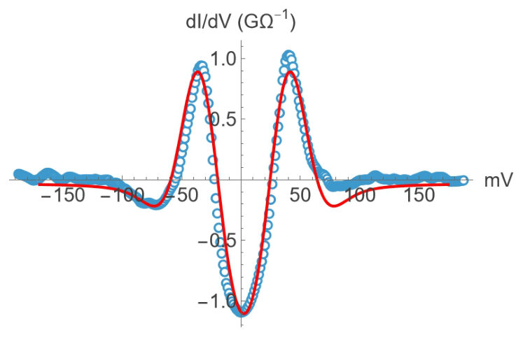
<figcaption class="paper-figure-caption"><b>Fig 3.</b> Figure 3: Tunneling differential conductance at low temperature compared with the memory- dressed density-of-states model. Blue points denote the background-removed dI/dV data, derived from the experimental data [14] and the red curve denotes the fitted response, Eqs. (61) and (67). The agreement of the coherence features and the broader background provides a cross-probe consistency check between ARPES and tunneling.</figcaption>
</figure>
<figure class="paper-figure-card">
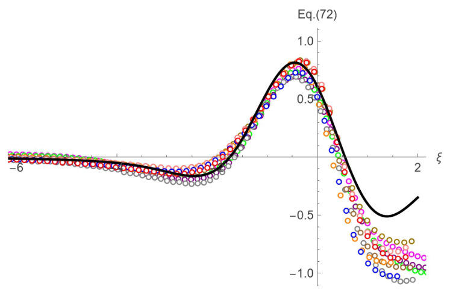
<figcaption class="paper-figure-caption"><b>Fig 4.</b> Figure 4: Approximate universal PCF scaling of Bi2212 antinodal ARPES spectra over the doping p = 0.141 (magenta), 0.160 (green), 0.180 (purple), 0.193 (gray), 0.203 (dark yellow), 0.205 (brown), 0.207 (orange), 0.211 (pink), 0.213 (blue), 0.215 (red). Open symbols denote scaled experimental spectra, derived from He et al. [15], and the black curve denotes the universal PCF backbone, −exp  −ξ2</figcaption>
</figure>
</div>

<p><strong>Summary.</strong> This work develops a dynamic theory for superconductivity in unconventional materials by treating the superconducting pair field as having memory effects due to local electronic fluctuations. It unifies spectroscopic measurements like ARPES and Raman scattering into a single framework governed by Gaussian-memory parabolic-cylinder functions, providing a detailed picture of how spectral weight shifts across different energy scales during the superconducting transition.</p>
<p><strong>Why it may be interesting.</strong> The use of memory effects derived from statistical ensembles to describe phase transitions is highly relevant to open quantum systems dynamics. The connection between spectral weight redistribution and structured decay envelopes provides a powerful tool for analyzing complex many-body relaxation processes.</p>
<details>
<summary>Detailed structure</summary>
<p><strong>Main problem.</strong> To develop a dynamical description of the superconducting pair field that treats it as a memory-dressed Bogoliubov pair field, moving beyond static order parameter approximations.</p>
<p><strong>Main result.</strong> The superconducting transition reorganizes spectral weight between an incoherent pseudogap memory channel and a coherent condensate-assisted Bogoliubov memory channel. The response is unified by a Gaussian-memory Parabolic-Cylinder Function (PCF) framework.</p>
<p><strong>Method.</strong> The authors derive the dynamics by coupling the pair field to fluctuating local modes, leading to an ensemble average that introduces a characteristic Gaussian memory factor into the effective action.</p>
<p><strong>Model / system.</strong> The model focuses on unconventional superconductors, specifically cuprates like Bi2Sr2CaCu2O(8+d). The theory uses the Cooper-channel Hubbard-Stratonovich field ($\Delta$) and incorporates fluctuations arising from momentum-space spectral cavities (the pseudogap).</p>
<p><strong>Key observables.</strong> Frequency-domain response expressed via parabolic-cylinder functions; measurable quantities include Raman spectra, ARPES background signatures, and superconducting gap features.</p>
<p><strong>Important parameters / regimes.</strong> Critical temperatures ($T^*$, $T_{	ext{pair}}$, $T_c$); characteristic dephasing times ($    au_{    ext{pg}},   au_{    ext{sc}}$); algebraic power laws ($p=-1/2, 1/2, 1, \dots$).</p>
<p><strong>Assumptions / limitations.</strong> The ensemble averaging of local frequency shifts is approximated as Gaussian to yield the exponential memory factor. The framework assumes that different spectroscopic probes are projections of a single underlying PCF continuum.</p>
<p><strong>Paper structure.</strong> The paper builds from establishing the need for dynamic pair-field treatment, deriving the memory kernel via ensemble averaging over local fluctuations, and finally unifying the resulting spectral features (pseudogap, superconducting) within a single PCF mathematical structure.</p>
</details>
<details>
<summary>Abstract</summary>
<p>We develop a dynamical description of the superconducting pair field in which the Cooper-channel Hubbard--Stratonovich field $Δ$ is treated as a memory-dressed Bogoliubov pair field rather than as a purely static order parameter. Starting from the standard pair-field effective action, we couple $Δ$ to antinode-selected collective or self-generated fields. An ensemble of such modes produces a distribution of local Bogoliubov frequencies; when this distribution is approximately Gaussian, ensemble averaging gives the memory factor $\exp[-t^2/(2τ_g^2)]$. In cuprate superconductors, the antinodal gap or pseudogap restricts the active electronic phase space and acts as a momentum-space spectral cavity. It selects fluctuation wavevectors $\mathbf Q_a$ that may become charge-density-wave-like instabilities in an ordered limit, but behave as a reservoir of local collective fields in the fluctuating regime. The same framework admits resonant algebraic prefactors, so that threshold and forced-oscillator responses generate the hierarchy $p=-1/2,1/2,1,3/2,\ldots$, while the Gaussian envelope cuts off secular growth and converts these branches into finite spectral components. The resulting picture contains a robust pseudogap memory channel and, below $T_c$, an additional condensate-assisted coherent channel proportional to $|Δ_0(T)|^2$. Thus the superconducting transition primarily reorganizes pair-field spectral weight between incoherent pseudogap memory and coherent Bogoliubov memory. The frequency-domain response is expressed in terms of parabolic-cylinder functions, and comparisons with Raman, ARPES, tunneling, and doping-dependent ARPES scaling suggest that these probes are complementary projections of the same Gaussian-memory pair continuum. We compare our numerical results with the recent experimental data on Bi$_2$Sr$_2$CaCu$_2$O$_{8+δ}$.</p>
</details>
<p><sub><a href="#top">↑ back to top</a></sub></p>

<p><a id="paper-2607.04834"></a></p>
<h3 id="hidden-gauge-freedom-in-complex-pole-hierarchical-equations-of-motion"><a href="http://arxiv.org/abs/2607.04834v1">Hidden Gauge Freedom in Complex-Pole Hierarchical Equations of Motion</a></h3>
<p><strong>Authors:</strong> Tianchu Li, Andrés Montoya-Castillo<br>
<strong>Type:</strong> theory · <strong>Category:</strong> other · <strong>PDF:</strong> <a href="https://arxiv.org/pdf/2607.04834v1">https://arxiv.org/pdf/2607.04834v1</a><br>
<strong>Analysis basis:</strong> full PDF text, analyzed in chunks
<strong>Topic relevance:</strong> 🔥 <code>methods for driven-dissipative</code> <strong>4/5</strong> · <code>Keldysh / 2PI / non-Gaussian methods</code> <strong>3/5</strong> · <code>correlated / nonlocal dissipation</code> <strong>3/5</strong> · <code>driven-dissipative phase transition</code> <strong>2/5</strong> · <code>non-equilibrium dynamics</code> <strong>2/5</strong> · <code>Kondo &amp; dissipative impurity</code> <strong>1/5</strong> · <code>analog quantum simulation</code> <strong>1/5</strong> · <code>correlated cavity matter</code> <strong>1/5</strong> · <code>non-equilibrium universality</code> <strong>1/5</strong></p>
<div class="figure-strip-hint">↔ Scroll figures horizontally</div>
<div class="paper-figures-scroll">
<figure class="paper-figure-card">

<figcaption class="paper-figure-caption"><b>Fig 1.</b> FIG. 1. Schematic derivation of the GO–HEOM and the two major instability mechanisms in complex-pole HEOM.</figcaption>
</figure>
<figure class="paper-figure-card">

<figcaption class="paper-figure-caption"><b>Fig 2.</b> FIG. 2. (a) ⟨σz(t)⟩under an intermediate coupled BO spec- tral density (p0 = 1.0) for conventional complex pole HEOM (ϕr = 1.0) and GO–HEOM (ϕr = 1.4). In the strong-coupling regime of the BO spectral density (p0 = 3.0). (b) Henrici departure from normality as a function of the gauge-scaling parameter ϕr. (c) Maximum real part of the eigenvalue spec- trum as a function of ϕr. (d) Eigenspectra for ϕr = 1.0 and ϕr = 1.4.</figcaption>
</figure>
<figure class="paper-figure-card">
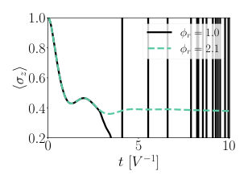
<figcaption class="paper-figure-caption"><b>Fig 3.</b> FIG. 3. ⟨σz(t)⟩with strong coupling to a BO (p0 = 10.0) obtained with conventional complex-pole HEOM (ϕr = 1.0) and gauge-transformed HEOM (ϕr = 2.1).</figcaption>
</figure>
<figure class="paper-figure-card">
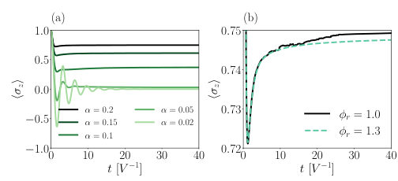
<figcaption class="paper-figure-caption"><b>Fig 4.</b> FIG. 4. Spin-boson dynamics with a sub-Ohmic spectral den- sity at zero temperature. (a) ⟨σz(t)⟩as a function of cou- pling strength, α. (b) Error accretion in conventional HEOM (ϕr = 1.0) compared to our GO-HEOM (ϕr = 1.3) under strong coupling (α = 0.2).</figcaption>
</figure>
</div>

<p><strong>Summary.</strong> This paper reveals a previously unknown 'hidden gauge freedom' within the complex-pole HEOM formalism used for open quantum systems. By optimizing this gauge parameter, the authors introduce GO-HEOM, a method that significantly enhances numerical stability. This allows researchers to simulate strongly coupled or highly non-Markovian dynamics regimes that were previously inaccessible due to computational instabilities.</p>
<p><strong>Why it may be interesting.</strong> This work provides a powerful, general mathematical tool (the gauge optimization) to push the boundaries of numerically exact quantum dynamics simulations for open systems, which is crucial for modeling realistic quantum materials and environments.</p>
<details>
<summary>Detailed structure</summary>
<p><strong>Main problem.</strong> The primary challenge addressed is the numerical instability inherent in complex-pole Hierarchical Equations of Motion (HEOM) when simulating open quantum systems.</p>
<p><strong>Main result.</strong> The authors discovered a hidden gauge freedom within the HEOM formulation, allowing them to construct GO-HEOM which eliminates spectral divergences and extends simulations into previously inaccessible strongly coupled or sub-Ohmic regimes.</p>
<p><strong>Method.</strong> They analyze the structure of the Liouvillian generator by identifying a continuous gauge transformation parameter ($\phi$) that preserves physical dynamics while optimizing numerical stability metrics like non-normality.</p>
<p><strong>Model / system.</strong> The work focuses on open quantum systems, using the spin-boson model as a primary benchmark. The theory is developed around the complex-pole decomposition of the bath correlation function $C(t)$.</p>
<p><strong>Key observables.</strong> Time evolution of observables like $\langle\sigma_z(t)
angle$, spectral divergence indicators, and non-normal error amplification metrics ($\eta_H$).</p>
<p><strong>Important parameters / regimes.</strong> Coupling strengths ($\alpha$), bath spectral density exponents ($s$ for sub-Ohmic), and the gauge-scaling parameter ($\phi_r$).</p>
<p><strong>Assumptions / limitations.</strong> The instability mechanisms (spectral divergence vs. non-normal amplification) are treated as distinct, controllable issues via the gauge transformation.</p>
<p><strong>Figures summary.</strong> Figures illustrate the comparison of dynamics using conventional HEOM versus GO-HEOM across various coupling regimes, demonstrating stability improvements and convergence with respect to the optimization parameters.</p>
<p><strong>Paper structure.</strong> The paper first establishes the numerical instability problem in complex-pole HEOM. It then derives the existence of a gauge freedom ($\phi$) that parameterizes equivalent Liouvillians. Finally, it optimizes this gauge to create GO-HEOM and validates its superior performance across various non-Markovian spectral densities.</p>
</details>
<details>
<summary>Abstract</summary>
<p>While complex-pole hierarchical equations of motion (HEOM) have dramatically expanded the reach of numerically exact quantum dynamics simulations of open quantum systems, they suffer from numerical instabilities rooted in the non-Hermitian structure of their Liouvillian. Yet, the origin of this structure remains obscure. Here, we report a previously unknown gauge freedom in complex-pole HEOM: a continuous family of analytically equivalent Liouvillians, all encoding the same bath correlation function, whose numerical properties vary dramatically. This gauge controls both the eigenspectrum and non-normality of the hierarchy generator, revealing spectral divergence and non-normal error amplification as two distinct instability mechanisms. By optimizing this gauge, we introduce GO--HEOM, which eliminates divergences in strongly coupled Brownian oscillator environments and extends numerically exact simulations of sub-Ohmic dynamics -- including through the delocalized-to-localized quantum phase transition -- to previously inaccessible coupling strengths. Because this gauge transformation is independent of the bath-correlation decomposition scheme, our GO--HEOM becomes a general, broadly compatible strategy for accessing numerically exact quantum dynamics of open quantum systems over arbitrary coupling and highly non-Markovian regimes.</p>
</details>
<p><sub><a href="#top">↑ back to top</a></sub></p>

<p><a id="paper-2607.04298"></a></p>
<h3 id="incompatibility-assisted-zeno-like-confinement-enables-unbounded-sharing-of-nonlocality"><a href="http://arxiv.org/abs/2607.04298v1">Incompatibility assisted Zeno-like confinement enables unbounded sharing of nonlocality</a></h3>
<p><strong>Authors:</strong> Prerna Rao, Som Kanjilal<br>
<strong>Type:</strong> theory · <strong>Category:</strong> quantum information and computing · <strong>PDF:</strong> <a href="https://arxiv.org/pdf/2607.04298v1">https://arxiv.org/pdf/2607.04298v1</a><br>
<strong>Analysis basis:</strong> full PDF text, analyzed in chunks
<strong>Topic relevance:</strong> 🔥 <code>quantum measurements</code> <strong>4/5</strong> · <code>correlated / nonlocal dissipation</code> <strong>3/5</strong> · <code>entanglement &amp; information structure</code> <strong>3/5</strong> · <code>measurement-induced transitions</code> <strong>3/5</strong> · <code>driven-dissipative phase transition</code> <strong>2/5</strong> · <code>methods for driven-dissipative</code> <strong>1/5</strong> · <code>non-equilibrium dynamics</code> <strong>1/5</strong> · <code>non-equilibrium universality</code> <strong>1/5</strong></p>
<div class="figure-strip-hint">↔ Scroll figures horizontally</div>
<div class="paper-figures-scroll">
<figure class="paper-figure-card">
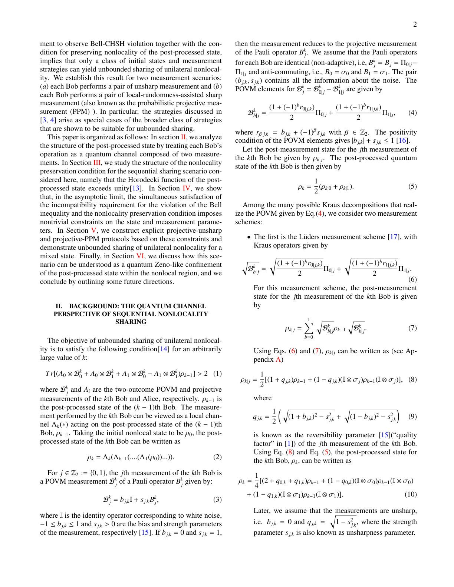
<figcaption class="paper-figure-caption"><b>Fig 1.</b> Low-resolution page preview, page 2</figcaption>
</figure>
<figure class="paper-figure-card">

<figcaption class="paper-figure-caption"><b>Fig 2.</b> Low-resolution page preview, page 3</figcaption>
</figure>
<figure class="paper-figure-card">
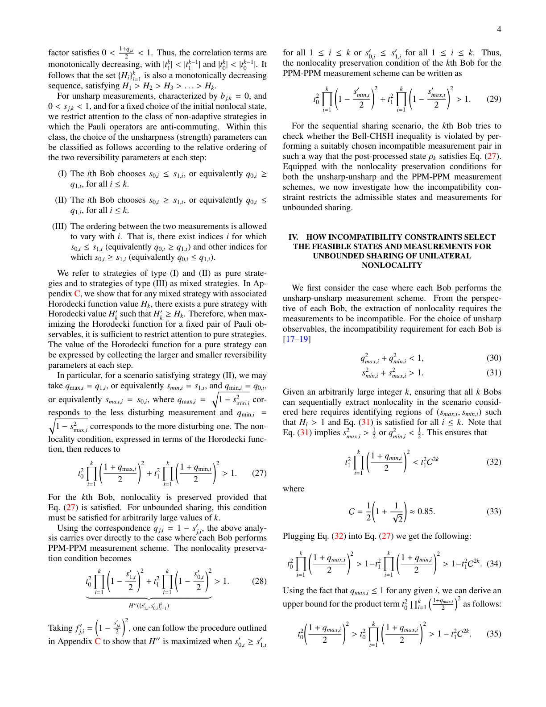
<figcaption class="paper-figure-caption"><b>Fig 3.</b> Low-resolution page preview, page 4</figcaption>
</figure>
<figure class="paper-figure-card">
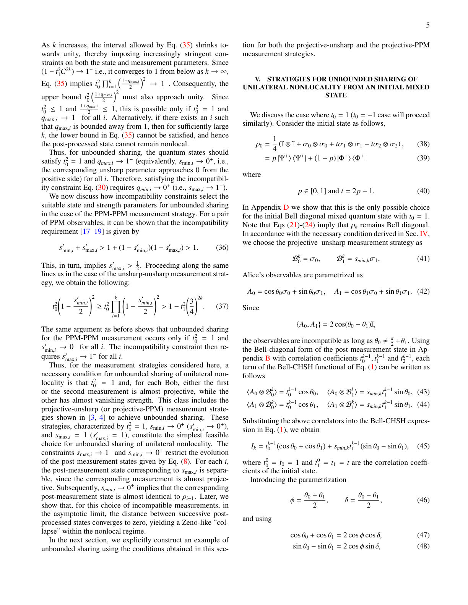
<figcaption class="paper-figure-caption"><b>Fig 4.</b> Low-resolution page preview, page 5</figcaption>
</figure>
<figure class="paper-figure-card">

<figcaption class="paper-figure-caption"><b>Fig 5.</b> Low-resolution page preview, page 6</figcaption>
</figure>
</div>

<p><strong>Summary.</strong> This paper theoretically analyzes how nonlocality (Bell-nonlocality) can be shared sequentially among an infinite number of copies using incompatible measurements. It finds that this process leads to a unique 'Zeno-like confinement' where the resulting states converge while remaining nonlocal. The findings establish stringent constraints on measurement choices necessary for such robust, unbounded sharing.</p>
<p><strong>Why it may be interesting.</strong> This work provides a deep theoretical understanding of how quantum correlations can be robustly distributed over many sequential steps, drawing parallels to physical phenomena like the Quantum Zeno Effect in open quantum systems.</p>
<details>
<summary>Detailed structure</summary>
<p><strong>Main problem.</strong> The research investigates the necessary conditions for sequentially sharing Bell-nonlocality among an unbounded number of copies using incompatible measurements.</p>
<p><strong>Main result.</strong> Unbounded nonlocality sharing is possible, leading to a quantum Zeno-like confinement where successive post-processed states become almost identical while maintaining nonlocality.</p>
<p><strong>Method.</strong> The authors analyze two measurement schemes (unsharp and PPM) by deriving recurrence relations for the post-processed state and imposing constraints based on the preservation of the Horodecki function ($H_k > 1$).</p>
<p><strong>Model / system.</strong> The model involves a bipartite qubit system initialized in a nonlocal Bell diagonal state ($
ho_0$), which undergoes repeated local measurements by sequential parties (Bobs).</p>
<p><strong>Key observables.</strong> Violation of the Bell-CHSH inequality ($I_k > 2$) and the Horodecki function ($H_k > 1$).</p>
<p><strong>Important parameters / regimes.</strong> The asymptotic limit ($k 	o \infty$), measurement parameters (e.g., reversibility $q_{j,k}$ or strength $s'_{j,k}$), and initial state parameters.</p>
<p><strong>Assumptions / limitations.</strong> The analysis assumes non-adaptive measurements and focuses on pure strategies to maximize the nonlocality measure; the mechanism relies critically on one measurement being 'almost projective' (the anchor).</p>
<p><strong>Paper structure.</strong> The paper establishes the requirements for unbounded sharing, derives post-processed states for two specific measurement types (Lüders/unsharp and PPM), analyzes the nonlocality preservation condition in the asymptotic limit, and constructs feasible sequences of measurement parameters demonstrating Zeno-like confinement.</p>
</details>
<details>
<summary>Abstract</summary>
<p>To enable sequential sharing of Bell-nonlocality by an unbounded number of copies, each copy must satisfy two requirements. First, the measurements must be incompatible to extract nonlocality. Second, the post-processsed state, obtained as an equal mixture of the two post-measurement states, must remain nonlocal. We show that the incompatibility requirements impose nontrivial constraints on the choice of the initial nonlocal state and the amount of measurement noise required to ensure that the post-processed state remains nonlocal for an unbounded number of copies. We establish this result for two measurement scenarios, namely, when each copy performs unsharp measurements corresponding to a pair of anti-commuting Pauli observables, and when each copy performs probabilistic projective measurements (PPMs) of a pair of anti-commuting Pauli observables. Furthermore, we show that, in the asymptotic limit, the nonlocal post-processed states of all the copies are almost identical, leading to a quantum Zeno-like confinement within the nonlocal region.</p>
</details>
<p><sub><a href="#top">↑ back to top</a></sub></p>

<p><a id="paper-2607.04115"></a></p>
<h3 id="infrared-divergences-as-itinerant-vacua"><a href="http://arxiv.org/abs/2607.04115v1">Infrared Divergences as Itinerant Vacua</a></h3>
<p><strong>Authors:</strong> Masahiro Morikawa<br>
<strong>Type:</strong> theory · <strong>Category:</strong> statistical mechanics · <strong>PDF:</strong> <a href="https://arxiv.org/pdf/2607.04115v1">https://arxiv.org/pdf/2607.04115v1</a><br>
<strong>Analysis basis:</strong> full PDF text, analyzed in chunks
<strong>Topic relevance:</strong> 🔥 <code>Keldysh / 2PI / non-Gaussian methods</code> <strong>4/5</strong> · <code>correlated / nonlocal dissipation</code> <strong>3/5</strong> · <code>driven-dissipative phase transition</code> <strong>3/5</strong> · <code>methods for driven-dissipative</code> <strong>3/5</strong> · <code>non-equilibrium dynamics</code> <strong>3/5</strong> · <code>non-equilibrium universality</code> <strong>2/5</strong></p>
<div class="figure-strip-hint">↔ Scroll figures horizontally</div>
<div class="paper-figures-scroll">
<figure class="paper-figure-card">
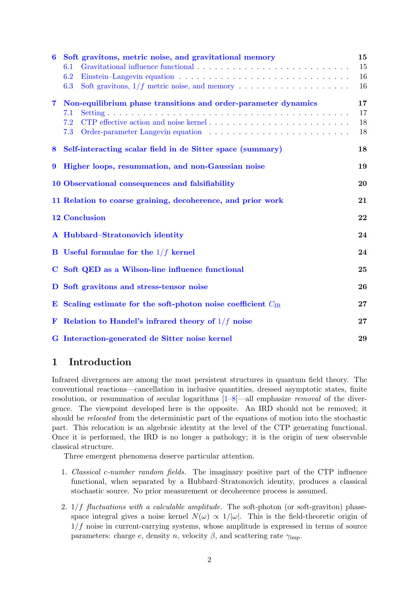
<figcaption class="paper-figure-caption"><b>Fig 1.</b> Low-resolution page preview, page 2</figcaption>
</figure>
<figure class="paper-figure-card">
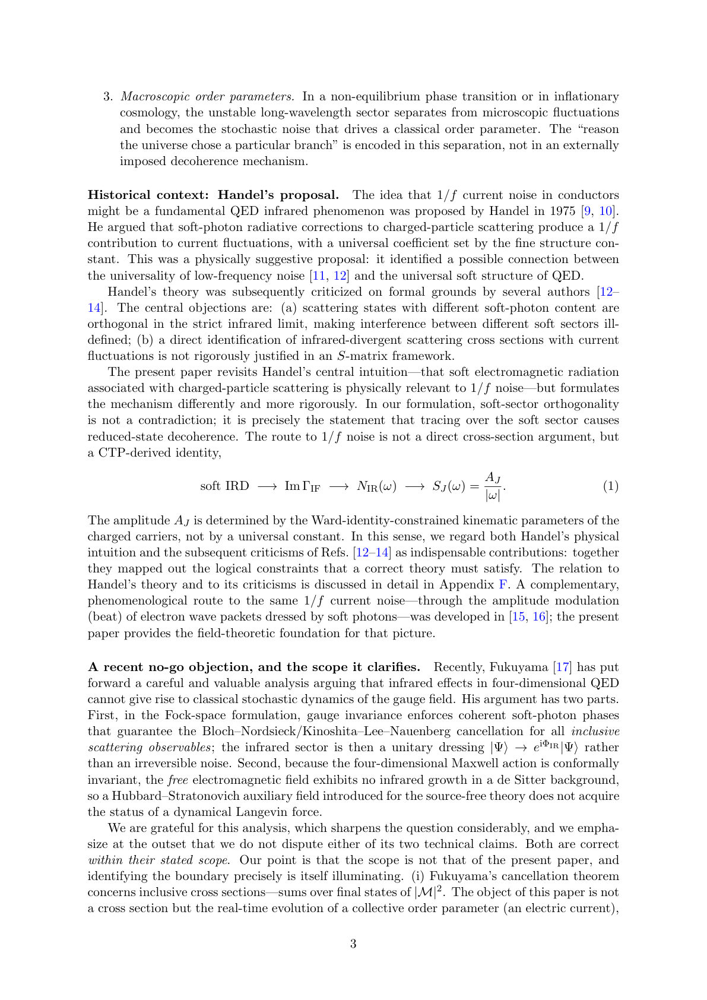
<figcaption class="paper-figure-caption"><b>Fig 2.</b> Low-resolution page preview, page 3</figcaption>
</figure>
<figure class="paper-figure-card">

<figcaption class="paper-figure-caption"><b>Fig 3.</b> Low-resolution page preview, page 4</figcaption>
</figure>
<figure class="paper-figure-card">
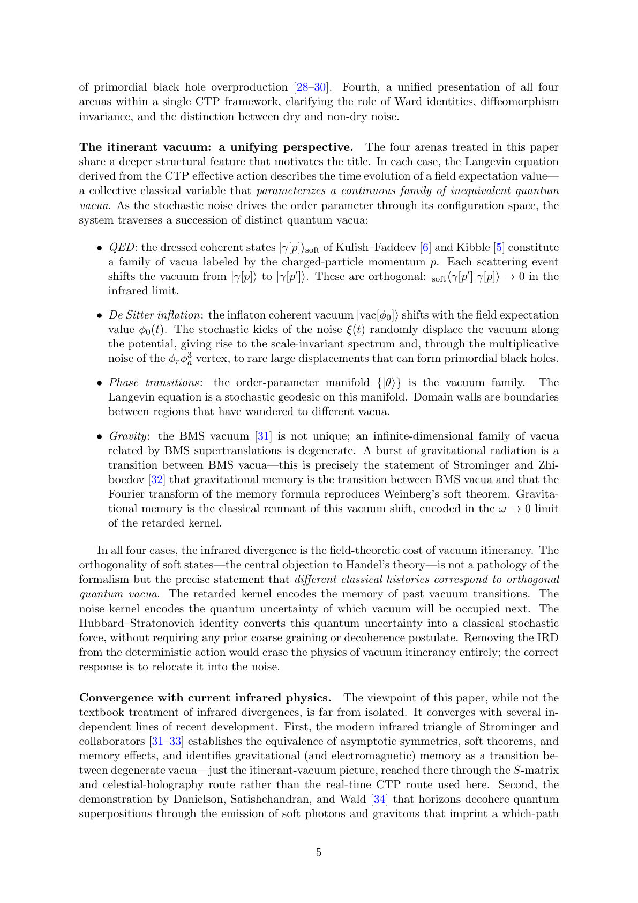
<figcaption class="paper-figure-caption"><b>Fig 4.</b> Low-resolution page preview, page 5</figcaption>
</figure>
<figure class="paper-figure-card">

<figcaption class="paper-figure-caption"><b>Fig 5.</b> Low-resolution page preview, page 6</figcaption>
</figure>
</div>

<p><strong>Summary.</strong> This paper reinterprets infrared divergences (IRDs) as the physical signature of an 'itinerant vacuum'—a system continuously moving between distinct quantum states. Using advanced CTP formalism, the authors algebraically convert these divergences into a classical stochastic source term. This framework successfully unifies the origin of phenomena like $1/f$ noise and gravitational memory across diverse fields from QED to cosmology.</p>
<p><strong>Why it may be interesting.</strong> It provides a powerful, non-perturbative tool for handling low-energy divergences in quantum field theory by mapping them onto observable classical noise sources, which is highly relevant for open quantum systems dynamics.</p>
<details>
<summary>Detailed structure</summary>
<p><strong>Main problem.</strong> The paper develops a constructive framework to interpret infrared divergences (IRDs) not as pathologies, but as signatures of an 'itinerant vacuum' undergoing continuous evolution.</p>
<p><strong>Main result.</strong> It shows that the IRD can be algebraically converted into a classical stochastic source term within the real-time CTP effective action, unifying the origin of $1/f$ noise and gravitational memory effects.</p>
<p><strong>Method.</strong> The core method involves using the closed-time-path (CTP) formalism and applying a Hubbard–Stratonovich identity to separate the divergent imaginary part of the influence functional into a classical stochastic source term.</p>
<p><strong>Model / system.</strong> Applications include soft QED, scalar fields in de Sitter space, soft gravitons, and general non-equilibrium phase transitions, all modeled by evolving an order parameter through inequivalent quantum vacua.</p>
<p><strong>Key observables.</strong> $1/f$ noise (in current or metric fluctuations), gravitational memory effects, and non-Gaussian fluctuations during phase transitions.</p>
<p><strong>Important parameters / regimes.</strong> The dynamics are governed by the evolution of a classical order parameter across a manifold of vacuum states.</p>
<p><strong>Assumptions / limitations.</strong> The approach requires no prior coarse graining or decoherence assumption; the stochastic source $\xi$ is treated as a c-number average because IR divergences do not depend on $\hbar$.</p>
<p><strong>Paper structure.</strong> The paper builds from establishing the concept of the itinerant vacuum, detailing the technical machinery using the CTP effective action and Hubbard–Stratonovich identity, and then applying this unified mechanism to several physical arenas (QED, de Sitter space, gravity).</p>
</details>
<details>
<summary>Abstract</summary>
<p>Infrared divergences (IRDs) are usually treated as pathologies to be cancelled, regularized, or hidden in dressed asymptotic states. This paper develops a complementary and constructive viewpoint: an IRD is the signature of an \emph{itinerant vacuum} -- a quantum vacuum that wanders continuously through a family of inequivalent states as a classical order parameter evolves. Each value of the order parameter carries its own coherent vacuum, so moving the order parameter means traversing a succession of orthogonal vacua. The IRD is the field-theoretic cost of this wandering, and the $1/f$ noise, gravitational memory, and non-Gaussian fluctuations that emerge from it are its observable classical remnants.   The technical core is an exact separation in the real-time closed-time-path (CTP) effective action. The infrared-divergent imaginary part of the influence functional must not be left as a divergent coefficient in a deterministic equation of motion; it is instead converted, by a Hubbard--Stratonovich identity, into a classical stochastic source. This step is an algebraic identity of the generating functional and requires no prior coarse graining or decoherence assumption: the retarded kernel encodes the memory of past vacuum transitions, while the noise kernel encodes the quantum uncertainty of the next one. We apply this construction to four parallel arenas -- soft QED, scalar fields in de Sitter space, soft gravitons, and non-equilibrium phase transitions -- and show that the same itinerant-vacuum mechanism underlies $1/f$ current noise, the primordial power spectrum, gravitational memory, and order-parameter dynamics. A geometric formulation in terms of a Hilbert-space bundle over the vacuum manifold is outlined as an outlook.</p>
</details>
<p><sub><a href="#top">↑ back to top</a></sub></p>

<p><a id="paper-2607.04896"></a></p>
<h3 id="photonic-cluster-state-generation-from-a-quantum-dot-emitting-in-the-telecom-c-band"><a href="http://arxiv.org/abs/2607.04896v1">Photonic Cluster State Generation from a Quantum Dot Emitting in the Telecom C-band</a></h3>
<p><strong>Authors:</strong> Giora Peniakov, Reza Hekmati, Johannes Michl, Mohamed Helal, Moritz Meinecke, Jochen Kaupp, Yorick Reum, Martin Kamp, Monika Emmerling, Andreas Theo Pfenning, Sven Hoefling, Tobias Huber-Loyola<br>
<strong>Type:</strong> experiment · <strong>Category:</strong> quantum information and computing · <strong>PDF:</strong> <a href="https://arxiv.org/pdf/2607.04896v1">https://arxiv.org/pdf/2607.04896v1</a><br>
<strong>Analysis basis:</strong> full PDF text, analyzed in chunks
<strong>Topic relevance:</strong> 🔥 <code>QC/QI experiment</code> <strong>4/5</strong> · <code>quantum optics experiment</code> <strong>3/5</strong> · <code>spintronics-quantum-optics interface</code> <strong>3/5</strong> · <code>entanglement &amp; information structure</code> <strong>2/5</strong> · <code>Tavis-Cummings &amp; cavity-many-emitter</code> <strong>1/5</strong> · <code>analog quantum simulation</code> <strong>1/5</strong> · <code>correlated cavity matter</code> <strong>1/5</strong> · <code>exotic spin models in light-matter</code> <strong>1/5</strong> · <code>interference shaping light</code> <strong>1/5</strong> · <code>non-equilibrium dynamics</code> <strong>1/5</strong></p>
<div class="figure-strip-hint">↔ Scroll figures horizontally</div>
<div class="paper-figures-scroll">
<figure class="paper-figure-card">

<figcaption class="paper-figure-caption"><b>Fig 1.</b> Fig. 1. a Circular-Bragg grating microcavity. b Polarization resolved photoluminescence under above-band excitation. 𝑋0 is the neutral exciton and 𝑋+ is the positive trion recombination transition. The broad emission feature around 1552 nm comes from other transitions feeding into the cavity. H(V) stands for horizontal(vertical) linear polarization. c Cluster-state generation circuit consisting of CNOT and 𝐺 gates. Given an input state |𝜓⟩= |−𝑦⟩, a linear cluster state is generated. A red dashed frame marks a single circuit building block (CBB) that we characterize using a quantum process tomography. d Bloch sphere representation of the ground state hole spin illustrating the quarter-...</figcaption>
</figure>
<figure class="paper-figure-card">
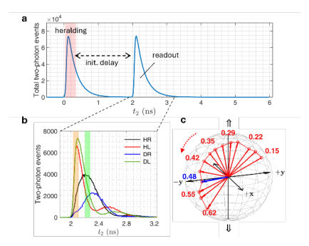
<figcaption class="paper-figure-caption"><b>Fig 2.</b> Fig. 2. Experimental characterization of the spin state at the CBB input. a Time resolved emission from the 𝑋+ following excitation with two laser pulses used for spin heralding and readout. b Polarization-resolved time traces from the readout pulse, conditioned on a heralding photon detection emitted during the pink-highlighted post selection time window in panel ‘a’. The plot labels HR, HL, DR and DL indicate the excitation and detection polarizations, respectively. Yellow- and green-highlighted areas mark the 80-ps time windows at 𝑡= 0 and 𝑡= 𝑇𝑒/4 used to probe the spin projections {𝜌𝑥, 𝜌𝑦, 𝜌𝑧}. c A series of spin readouts with variable initialization delay is visualized as vectors on...</figcaption>
</figure>
<figure class="paper-figure-card">

<figcaption class="paper-figure-caption"><b>Fig 3.</b> Fig. 3. CBB output: spin photon tomography. a Emission from the 𝑋+ following three excitation pulses. The red dashed frame indicates the CBB operation consisting of a CNOT pulse followed by a time interval 𝑇𝜋/2 implementing the 𝐺 gate through Larmor precession. Pink-highlighted regions mark the post-selection time windows for photon detection. Spin–photon tomography is obtained by correlating photons from the heralding, CNOT, and readout pulses. b Real and imaginary part of the measured spin–photon density matrix, 𝜌(|−𝑦⟩).</figcaption>
</figure>
<figure class="paper-figure-card">
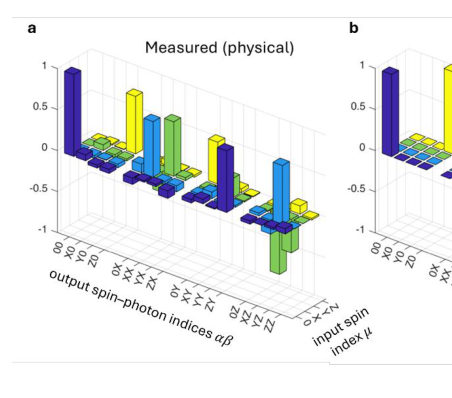
<figcaption class="paper-figure-caption"><b>Fig 4.</b> Fig. 4. Process map 𝚽. a The 64 measured real elements ϕ𝛼𝛽</figcaption>
</figure>
</div>

<p><strong>Summary.</strong> The paper reports the deterministic generation of photonic cluster states in the telecom C-band using an InAs quantum dot. By leveraging hole spin qubits and characterizing the underlying process map, the authors demonstrated entanglement and achieved a three-qubit state fidelity of 0.71. This work is significant because it enables scalable quantum information processing compatible with existing optical fiber infrastructure.</p>
<p><strong>Why it may be interesting.</strong> This work directly addresses a major bottleneck in quantum networking by achieving high-fidelity photonic resource generation at telecom wavelengths using solid-state emitters, bridging fundamental physics research with practical quantum technology requirements.</p>
<details>
<summary>Detailed structure</summary>
<p><strong>Main problem.</strong> The primary goal is to deterministically generate photonic cluster states directly within the telecom C-band, which is crucial for quantum communication compatibility with existing fiber infrastructure.</p>
<p><strong>Main result.</strong> The authors successfully demonstrated deterministic generation of a three-qubit cluster state in the telecom C-band using an InAs quantum dot system. They achieved a process map fidelity of 0.71 and high photon indistinguishability ($\geq 83\%$).</p>
<p><strong>Method.</strong> Cluster state generation is realized by implementing a Circuit Building Block (CBB) sequence involving controlled-NOT gates and single-qubit rotations, all characterized via quantum process tomography.</p>
<p><strong>Model / system.</strong> The system uses an Indium-arsenide ($   ext{InAs}$) quantum dot embedded in a microcavity. Qubit encoding is achieved using the hole spin state, while photonic entanglement is generated through optical transitions to the positive trion ($    ext{X}^+$) at 1549 nm.</p>
<p><strong>Key observables.</strong> Cluster state fidelity ($\mathcal{F} = 0.71 \pm 0.01$), spin–photon polarization entanglement negativity ($\mathcal{N} = 0.27 \pm 0.02$), and photon indistinguishability ($V_{HOM} \geq 0.83$).</p>
<p><strong>Important parameters / regimes.</strong> The process operates at an $80 	ext{ MHz}$ repetition rate, utilizing a hole-spin coherence time ($T_2^*$) of $15.9 \pm 1.7 	ext{ ns}$.</p>
<p><strong>Assumptions / limitations.</strong> The characterization assumes that the fidelity can be extrapolated for larger cluster states by concatenating the CBB result multiple times.</p>
<p><strong>Figures summary.</strong> Figures illustrate the microcavity setup, the PL spectrum showing the $    ext{X}^+$ transition, and detailed circuit diagrams outlining the sequence of CNOT and single-qubit gates used to build the cluster state.</p>
<p><strong>Paper structure.</strong> The paper details the physical platform (QD in a cavity), outlines the protocol based on CBBs derived from spin/photon interactions, presents characterization results via process tomography and entanglement measurements, and concludes with the demonstration of multi-qubit cluster state generation.</p>
</details>
<details>
<summary>Abstract</summary>
<p>Photonic cluster states are a key resource for photonic quantum information processing. So far, deterministic generation of these states has been limited to the near-infrared wavelength range. To achieve quantum advantage in communication while maintaining compatibility with silicon photonics, operation in the telecom wavelength range is required. In this work, we demonstrate deterministic cluster state generation directly in the telecom C-band. This is achieved through repetitive excitation of a hole spin confined in an indium-arsenide quantum dot subjected to an external magnetic field. We characterize the quantum process that generates the cluster state by measuring its process map, obtaining a fidelity of $\mathrm{F} = 0.71 \pm 0.01$ to the ideal case. As part of this characterization, we observe spin--photon polarization entanglement with a negativity of $\mathrm{N} = 0.27 \pm 0.02$. The emitted photons exhibit indistinguishability of at least 83%, demonstrating the potential for future fusion gates necessary for photonic cluster state generation beyond linear connectivity.</p>
</details>
<p><sub><a href="#top">↑ back to top</a></sub></p>

<p><a id="paper-2607.04065"></a></p>
<h3 id="the-normalised-wigner-negativity-rate-as-a-second-moment-probe-of-infall-in-adsmath287math"><a href="http://arxiv.org/abs/2607.04065v1">The Normalised Wigner Negativity Rate as a Second-Moment Probe of Infall in AdS$_3$</a></h3>
<p><strong>Authors:</strong> Ritam Basu<br>
<strong>Type:</strong> theory · <strong>Category:</strong> statistical mechanics · <strong>PDF:</strong> <a href="https://arxiv.org/pdf/2607.04065v1">https://arxiv.org/pdf/2607.04065v1</a><br>
<strong>Analysis basis:</strong> full PDF text, analyzed in chunks
<strong>Topic relevance:</strong> 🔥 <code>entanglement &amp; information structure</code> <strong>4/5</strong> · 🔥 <code>non-equilibrium dynamics</code> <strong>4/5</strong> · <code>non-equilibrium universality</code> <strong>3/5</strong> · <code>Keldysh / 2PI / non-Gaussian methods</code> <strong>2/5</strong> · <code>driven-dissipative phase transition</code> <strong>2/5</strong> · <code>correlated / nonlocal dissipation</code> <strong>1/5</strong> · <code>methods for driven-dissipative</code> <strong>1/5</strong> · <code>scars &amp; prethermalization</code> <strong>1/5</strong></p>
<div class="figure-strip-hint">↔ Scroll figures horizontally</div>
<div class="paper-figures-scroll">
<figure class="paper-figure-card">

<figcaption class="paper-figure-caption"><b>Fig 1.</b> Figure 1. Saturation of the raw negativity (Analytic Limit). Time evolution of the macroscopic theoretical law [ξ/(−ln(1 −ξ))]2∆(dashed curves, eq. (4.12)) evaluated for ∆∈{1, 3/2, 2} with ε = 0.1 and β = 2π. The curves are normalized by their late-time saturation value, effectively setting the theoretical maximum to unity (dotted line). As t →∞(ξ →0), the geometric spreading mathematically cancels the return amplitude decay, causing the raw negativity to strictly saturate to the constant plateau N∞. This visualizes the asymptotic behavior described in Proposition 4.3 and demonstrates that the raw negativity is inherently bounded at late times, necessitating the seed-normalized diagnostic...</figcaption>
</figure>
<figure class="paper-figure-card">

<figcaption class="paper-figure-caption"><b>Fig 2.</b> Figure 2. Growth of the seed-normalized negativity (log–log). The exact discrete seed- normalized negativity N = Nraw/P (markers), computed from the Wootters discrete Wigner function on the ZD ×ZD phase space of prime dimension D = 2003 (ε = 0.1, β = 2π), plotted against sinh(πt/β) on log–log axes and divided by its value at πt/β = 1 (common footing). On these axes the continuum law N ∼sinh4∆(4.10) is a straight line of slope 4∆(dashed); the exact markers follow it (fitted slopes 3.91, 5.79, 7.74 for ∆= 1, 3</figcaption>
</figure>
<figure class="paper-figure-card">

<figcaption class="paper-figure-caption"><b>Fig 3.</b> Figure 3. Exact growth of the Krylov wavepacket variance. Var( ˆNKrylov) versus πt/β from the negative-binomial formula (3.5) (solid) and its late-time sinh4 asymptotic (dashed), for sin2(2πε/β) = 0.01 at ∆= 1.</figcaption>
</figure>
<figure class="paper-figure-card">
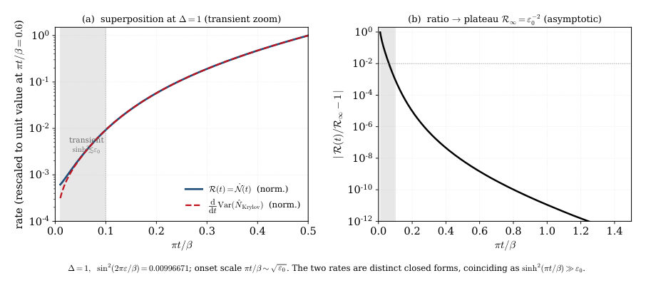
<figcaption class="paper-figure-caption"><b>Fig 4.</b> Figure 4. Superposition of R(t) and d Var/dt at ∆= 1. (a) The normalized negativity rate R = ˙N and the exact Krylov variance rate d dtVar( ˆNKrylov), each rescaled to unit value at the right edge, versus πt/β (log scale), zoomed to the transient/onset region for sin2(2πε/β) = 0.01. The grey band marks the transient sinh2(πt/β) ≲ε0, i.e. πt/β ≲√ε0, where the two rates differ; they coincide thereafter. The curves are built from different closed forms—R from the macroscopic-exact negativity N ∝[ln  1 + ε0/ sinh2(πt/β)  ]−2∆and d dtVar from the exact rate (5.1)—so their agreement is not a tautology. (b) Relative deviation of the ratio R/ d</figcaption>
</figure>
<figure class="paper-figure-card">
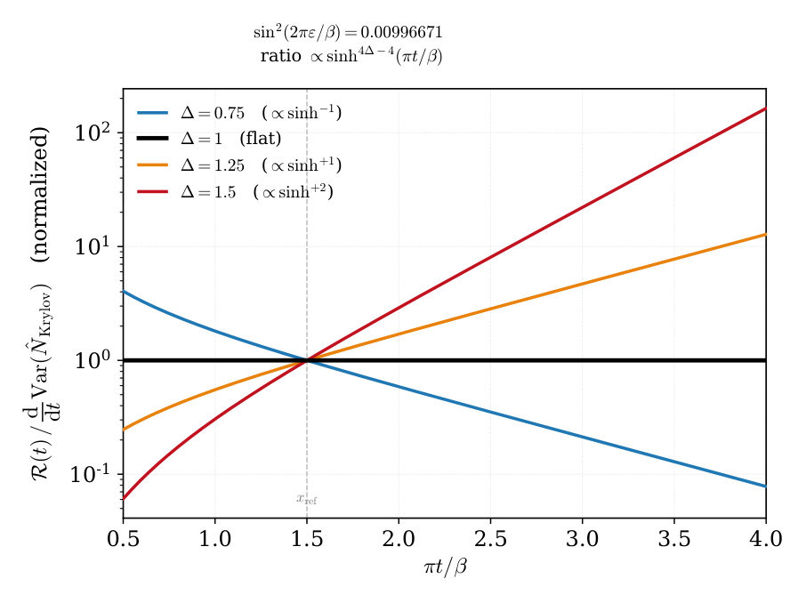
<figcaption class="paper-figure-caption"><b>Fig 5.</b> Figure 5. Diagnostic of the matching condition, with the asymptotics shown explicitly. The ratio R(t)  d</figcaption>
</figure>
</div>

<p><strong>Summary.</strong> This paper develops the use of the normalized Wigner negativity rate as a diagnostic tool to probe the second moment of quantum wavepacket spreading in AdS$_3$. By analyzing this rate, the authors establish that it directly measures the rate of tidal stretching experienced by nearby infalling geodesics when the system dimension matches the critical Breitenlohner-Freedman value.</p>
<p><strong>Why it may be interesting.</strong> The connection between higher-order quantum measures (negativity) and classical gravitational dynamics (tidal forces/geodesics) provides a powerful, non-standard tool for testing holographic duality predictions.</p>
<details>
<summary>Detailed structure</summary>
<p><strong>Main problem.</strong> The research aims to move beyond first-moment diagnostics (like spread complexity) to probe higher moments of quantum dynamics, specifically using the normalized Wigner negativity rate.</p>
<p><strong>Main result.</strong> The negativity rate matches the growth rate of the Krylov variance if and only if the dimension $\Delta$ equals 1, which corresponds physically to the rate of tidal stretching of infalling geodesics in AdS$_3$.</p>
<p><strong>Method.</strong> The analysis employs techniques from quantum information theory (Wigner negativity) applied to dynamics generated by a local operator quench on a CFT dual to an AdS black hole.</p>
<p><strong>Model / system.</strong> The system is modeled using the Krylov chain derived from a holographic CFT, whose evolution is governed by an effective Hamiltonian exhibiting $\mathfrak{su}(1, 1)$ symmetry. The statistics of the resulting occupation numbers follow a Negative Binomial Distribution.</p>
<p><strong>Key observables.</strong> Normalized Wigner Negativity Rate, Spread Complexity ($\langle \hat{N}_{	ext{Krylov}} 
angle$), Krylov Variance, and the transverse string size operator $\hat{N}_{	ext{str}}$.</p>
<p><strong>Important parameters / regimes.</strong> The conformal dimension $\Delta$, the time scale $t/eta$, and the Breitenlohner-Freedman dimension ($\Delta=1$) are crucial parameters.</p>
<p><strong>Assumptions / limitations.</strong> Key steps involve conjectures relating string operators to Krylov chain operators, and the analysis relies on specific asymptotic limits (macroscopic limit) and approximations for mode sums.</p>
<p><strong>Paper structure.</strong> The paper progresses by first establishing the inadequacy of first moments, then introducing the negativity rate as a second-moment probe. It develops the $\mathfrak{su}(1, 1)$ structure leading to Negative Binomial statistics, and finally connects this quantum diagnostic to geometric observables like tidal stretching in AdS$_3$.</p>
</details>
<details>
<summary>Abstract</summary>
<p>In spread complexity, the average position of an operator along its Krylov chain, recovers the right radial momentum of an infalling particle in AdS, yet it is a measure of the first moment, irrespective of the spread of the wavepacket away from its classical trajectory. The rate of a normalized Krylov-Wigner negativity can be proposed as a diagnostic of the second moment of the boundary state that captures this spreading. Starting with the \emph{seed-normalized} Krylov-Wigner distribution -- that is, the Wigner transform of the descendant cloud, with the decaying return amplitude divided out -- we obtain an analytic Bessel form in the macroscopic limit and compute its total negativity explicitly. Retaining the Bessel variable all the way through, we find that the negativity goes as $\sinh^{4Δ}(πt/β)$, while the raw, seed-normalized state negativity saturates, as dictated by the $O(\sqrt{D})$ bound. Using the exact negative binomial statistics of the Krylov chain and the momentum dictionary of Caputa et al.~\cite{Caputa:2024}, the rate of the negativity scales as the growth rate of the Krylov variance at late time asymptotics \emph{if and only if} $Δ=1$, the Breitenlohner-Freedman saturating dimension in $AdS_3$. This dimensionality is special in that the negativity rate is the product of the proper radial position and momentum, $\mathcal{R} \propto \mathcal{C} P_ρ$, i.e., the rate of the tidal stretch of nearby geodesic falling into the horizon. We comment on the direction for future research, in particular the interpretation of the transverse string size operator in terms of the Krylov number operator through the common $SU(1,1)$ discrete series.</p>
</details>
<p><sub><a href="#top">↑ back to top</a></sub></p>

<p><a id="paper-2607.03535"></a></p>
<h3 id="thermalization-hierarchy-from-irreducible-degrees-of-freedom"><a href="http://arxiv.org/abs/2607.03535v1">Thermalization hierarchy from irreducible degrees of freedom</a></h3>
<p><strong>Authors:</strong> Pedro Fittipaldi de Castro, Wladimir A. Benalcazar<br>
<strong>Type:</strong> theory · <strong>Category:</strong> statistical mechanics · <strong>PDF:</strong> <a href="https://arxiv.org/pdf/2607.03535v1">https://arxiv.org/pdf/2607.03535v1</a><br>
<strong>Analysis basis:</strong> full PDF text, analyzed in chunks
<strong>Topic relevance:</strong> 🔥 <code>entanglement &amp; information structure</code> <strong>4/5</strong> · 🔥 <code>scars &amp; prethermalization</code> <strong>4/5</strong> · <code>non-equilibrium dynamics</code> <strong>3/5</strong> · <code>non-equilibrium universality</code> <strong>2/5</strong> · <code>Keldysh / 2PI / non-Gaussian methods</code> <strong>1/5</strong> · <code>analog quantum simulation</code> <strong>1/5</strong> · <code>correlated / nonlocal dissipation</code> <strong>1/5</strong> · <code>driven-dissipative phase transition</code> <strong>1/5</strong> · <code>methods for driven-dissipative</code> <strong>1/5</strong></p>
<div class="figure-strip-hint">↔ Scroll figures horizontally</div>
<div class="paper-figures-scroll">
<figure class="paper-figure-card">
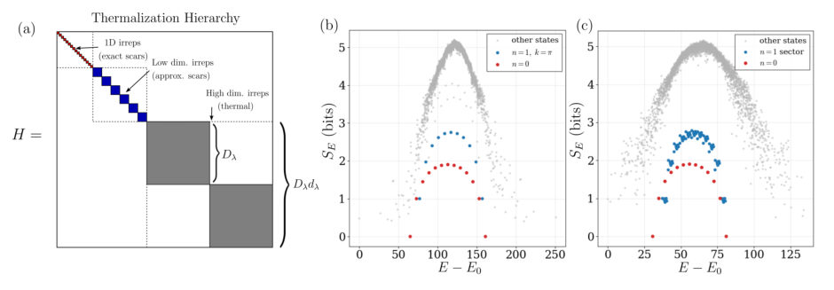
<figcaption class="paper-figure-caption"><b>Fig 1.</b> FIG. 1: Thermalization hierarchy. (a) Decomposition of the Hamiltonian (1) in the basis (5), showing dynamically isolated subspaces as diagonal blocks. Half-chain entanglement entropy of the eigenstates of (b) the local, translation invariant Hamiltonian (55) with κ = 2.5 and of (c) the nonlocal, disordered Hamiltonian (60) with κ = 0.02. Calculations done under periodic boundary conditions with parameters J1 = J2 = J3 = 1, and B = 8. Energies are shown relative to E0 of the ferromagnetic state |↑, ↑, . . . , ↑⟩.</figcaption>
</figure>
<figure class="paper-figure-card">
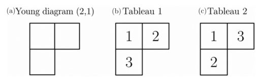
<figcaption class="paper-figure-caption"><b>Fig 2.</b> FIG. 2: Permutation irreps as Young diagrams. (a) Dia- gram corresponding to the (2, 1) irrep of S3. (b) and (c) are its two Young tableaux, which yield a two-dimensional irrep.</figcaption>
</figure>
<figure class="paper-figure-card">
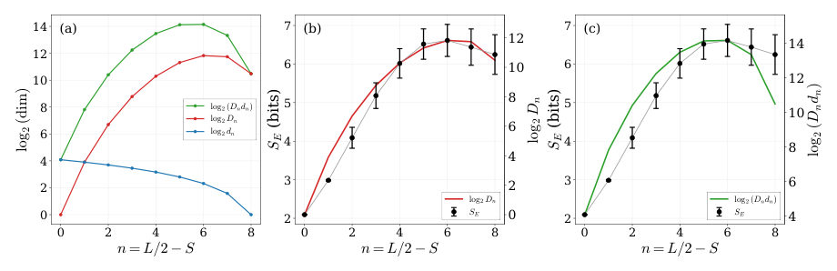
<figcaption class="paper-figure-caption"><b>Fig 3.</b> FIG. 3: (a) Dimensions Dn (dn) of the bond (commutant) algebra irreps as well as the dimension Dndn of the total spin sector versus n = L/2 −S for L = 16. Half-chain entanglement entropy SE averaged over all energy eigenstates of (10) with a given n and its comparison with the logarithm of (b) the bond-irrep dimensions Dn and (c) the spin sector dimensions Dndn.</figcaption>
</figure>
<figure class="paper-figure-card">

<figcaption class="paper-figure-caption"><b>Fig 4.</b> FIG. 4: Scaling of the half-chain entanglement entropy SE averaged over eigenstates of the Hamiltonian (10) with fixed n IDOF.</figcaption>
</figure>
</div>

<p><strong>Summary.</strong> The paper introduces the concept of 'irreducible degrees of freedom' (IDOF) derived from analyzing the bond algebra of quantum many-body systems. This IDOF count, $D_\lambda$, quantifies the thermalization capacity of a subspace, establishing a continuous hierarchy that smoothly interpolates between non-thermal scars and fully ergodic states. It provides an algebraic method to understand how local constraints dictate global thermal behavior.</p>
<p><strong>Why it may be interesting.</strong> This work provides a powerful algebraic tool to quantify non-equilibrium dynamics, linking microscopic structure (bond algebra irreps) directly to macroscopic thermodynamic concepts like entanglement and ergodicity. It offers a systematic way to classify quantum scars within broader ergodic regimes.</p>
<details>
<summary>Detailed structure</summary>
<p><strong>Main problem.</strong> To establish a quantitative 'thermalization hierarchy' that refines understanding of thermalization beyond simple symmetry sector decompositions in quantum many-body systems.</p>
<p><strong>Main result.</strong> The thermalization capacity is controlled by the irreducible degrees of freedom (IDOF), quantified by the bond algebra irrep dimension ($D_\lambda$), establishing a continuous hierarchy from scars to ergodic states.</p>
<p><strong>Method.</strong> Decomposition of the Hilbert space using the bond and commutant algebras, leading to an analysis based on irreducible representations ($    ext{irreps}$) and introducing the IDOF count as a diagnostic tool.</p>
<p><strong>Model / system.</strong> The study uses SU(2)-symmetric spin-1/2 chains as a paradigmatic example. The framework analyzes how dynamics are constrained by algebraic structures derived from local interactions (bond algebra).</p>
<p><strong>Key observables.</strong> Average eigenstate entanglement entropy, which is quantitatively related to $\log D_\lambda$.</p>
<p><strong>Important parameters / regimes.</strong> The bond irrep dimension ($D_\lambda$), which dictates the degree of thermalization; system size $L$ and total spin $S$.</p>
<p><strong>Assumptions / limitations.</strong> The analysis assumes that the algebraic decomposition provides a finer, physically relevant structure for dynamics than simple symmetry sector decompositions.</p>
<p><strong>Figures summary.</strong> Figure 1 illustrates the thermalization hierarchy using diagonal blocks from the bond algebra decomposition. Other figures detail Young diagrams and specific mathematical decompositions of state amplitudes.</p>
<p><strong>Paper structure.</strong> The paper systematically develops an algebraic framework by decomposing the Hilbert space via double-commutant pairs ($    ext{ASL}$ and $ ext{Asu}(2)$). It then applies this to analyze excitations (like two-magnon states) in terms of orthogonal components corresponding to different IDOF sectors, culminating in the definition of the thermalization hierarchy.</p>
</details>
<details>
<summary>Abstract</summary>
<p>The decomposition of the Hilbert space of a quantum many-body system into the irreducible representations of its bond and commutant algebras yields a finer structure of dynamically isolated subspaces than the mere decomposition into symmetry sectors. While it has been recognized that subspaces associated with low bond-irrep dimensions $D_λ$ tend to violate the eigenstate thermalization hypothesis (ETH), here we show that $D_λ$ controls thermalization continuously across the full spectrum of dynamical subspaces. Using SU(2)-symmetric spin-1/2 chains as a paradigmatic example, we demonstrate that $\mathrm{log} \ D_λ$ quantitatively accounts for the average eigenstate entanglement entropy within each sector, establishing a thermalization hierarchy that interpolates from exact quantum many-body scars at $D_λ=1$ to volume-law ergodic states at large $D_λ$. To make this concrete, we introduce the notion of irreducible degrees of freedom (IDOF), defined as the number of independently-varying spatial coordinates parametrizing a many-body state within a given bond-algebra sector, which provides a microscopic interpretation of $D_λ$ and of the resulting thermalization hierarchy. Finally, we show that by selectively breaking symmetries while preserving chosen bond-algebra sectors, one can embed families of nonthermal eigenstates at prescribed entanglement levels into an otherwise ergodic spectrum, generalizing restricted spectrum-generating algebras from towers of individual states to entire dynamical subspaces.</p>
</details>
<p><sub><a href="#top">↑ back to top</a></sub></p>

<p><a id="paper-2607.03939"></a></p>
<h3 id="disentangling-haldane-phase-by-generalized-clifford-circuits"><a href="http://arxiv.org/abs/2607.03939v1">Disentangling Haldane Phase by Generalized Clifford Circuits</a></h3>
<p><strong>Authors:</strong> Minsoo Kim, Changhun Oh, Donghoon Kim<br>
<strong>Type:</strong> theory · <strong>Category:</strong> numerical methods · <strong>PDF:</strong> <a href="https://arxiv.org/pdf/2607.03939v1">https://arxiv.org/pdf/2607.03939v1</a><br>
<strong>Analysis basis:</strong> full PDF text, analyzed in chunks
<strong>Topic relevance:</strong> 🔥 <code>analog quantum simulation</code> <strong>4/5</strong> · <code>entanglement &amp; information structure</code> <strong>3/5</strong> · <code>exotic spin models in light-matter</code> <strong>3/5</strong> · <code>methods for driven-dissipative</code> <strong>3/5</strong> · <code>non-equilibrium dynamics</code> <strong>2/5</strong> · <code>correlated / nonlocal dissipation</code> <strong>1/5</strong> · <code>driven-dissipative phase transition</code> <strong>1/5</strong></p>
<div class="figure-strip-hint">↔ Scroll figures horizontally</div>
<div class="paper-figures-scroll">
<figure class="paper-figure-card">
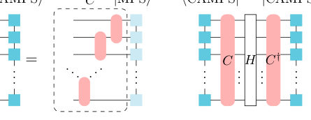
<figcaption class="paper-figure-caption"><b>Fig 1.</b> FIG. 1. Schematic of the CAMPS-based DMRG method. (a) The CAMPS is an ansatz |CAMPS⟩= C|MPS⟩. Here, C consists of sequential two-site Clifford gates, and each two- site gate is chosen to maximally reduce the entanglement of |CAMPS⟩. (b) By augmenting the MPS with C, the Hamil- tonian is transformed accordingly as e H = CHC†. The conju- gation preserves the energy expectation between the CAMPS and MPS frames.</figcaption>
</figure>
<figure class="paper-figure-card">
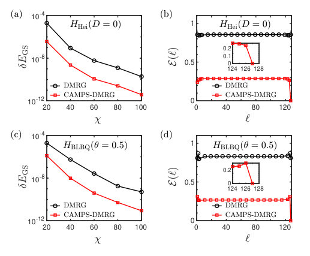
<figcaption class="paper-figure-caption"><b>Fig 2.</b> FIG. 2. The CAMPS-based DMRG results for the Heisen- berg and the BLBQ models. (a), (c) Relative ground-state energy error δEGS for N = 128 at (a) HHei(D = 0) and (c) HBLBQ(θ = 0.5). The DMRG result with χ = 1000 serves as the reference. Panels (b) and (d) display the correspond- ing entanglement entropy E(ℓ) for bipartitions of sizes ℓand N −ℓ. For both models, we observe that E(N −1) = 0 in the CAMPS-based DMRG results; see the insets of (b) and (d).</figcaption>
</figure>
<figure class="paper-figure-card">
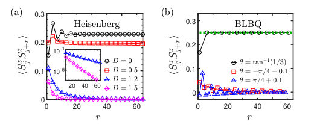
<figcaption class="paper-figure-caption"><b>Fig 3.</b> FIG. 3. Numerical results of the two-point correlation ⟨Sz j Sz j+r⟩for (a) the Heisenberg model and (b) the BLBQ model, for j = 32. The ground states are obtained using DMRG with N = 128 and χ = 300, and after applying UKW, the corresponding values of ⟨Sz j Sz j+r⟩are evaluated. The green dotted line in (b) represents the analytic value 1/4 given in Eq. (10). Inset (a): In the trivial phase, the correla- tion decays exponentially.</figcaption>
</figure>
</div>

<p><strong>Summary.</strong> This paper analyzes how disentangling transformations reveal hidden symmetries in spin-1 quantum chains in the Haldane phase. By extending DMRG using Clifford circuits (CAMPS), the authors identify the optimal transformation as the Kramers--Wannier map. This mapping demonstrates a novel unitary pathway from topological order to symmetry breaking, providing powerful theoretical tools for characterizing quantum phases.</p>
<p><strong>Why it may be interesting.</strong> The explicit connection between entanglement reduction techniques (DMRG/MPS) and fundamental physical symmetries ($\mathbb{Z}_2$ SSB) provides deep insight into the structure of topological order in quantum materials, which is highly relevant to AMO physics simulations.</p>
<details>
<summary>Detailed structure</summary>
<p><strong>Main problem.</strong> The study investigates the analytic structure of disentangling transformations used in simulating quantum many-body systems, specifically within the Haldane phase.</p>
<p><strong>Main result.</strong> The optimal local Clifford disentangler for the Haldane phase is shown to implement the generalized Kramers--Wannier (KW) transformation, which maps the SPT phase to a state exhibiting spontaneous $\mathbb{Z}_2$ symmetry breaking.</p>
<p><strong>Method.</strong> The authors extend the Clifford-circuit-augmented Matrix Product States (CAMPS)-based Density-Matrix Renormalization Group (DMRG) method to spin-1 systems for analysis.</p>
<p><strong>Model / system.</strong> The work focuses on spin-1 quantum chains, particularly those exhibiting the Haldane phase, modeled by Hamiltonians like the Heisenberg or Bilinear-biquadratic (BLBQ) chain. The analytically tractable state used is the Affleck–Kennedy–Lieb–Tasaki (AKLT) state.</p>
<p><strong>Key observables.</strong> Entanglement entropy $E(\ell)$, ground-state energy error $\delta E_{GS}$, and long-range correlation functions $\langle S^z_j S^z_{j+r} \rangle$.</p>
<p><strong>Important parameters / regimes.</strong> The analysis is sensitive to the specific Hamiltonian parameters (e.g., $D$ in Heisenberg, $\theta$ in BLBQ) and the bond dimension used in MPS representations.</p>
<p><strong>Assumptions / limitations.</strong> The core assumption is that the optimal disentangler can be found by optimizing over generalized Clifford circuits within the CAMPS framework.</p>
<p><strong>Figures summary.</strong> Figures compare CAMPS-DMRG results for different spin models, showing energy error and entanglement entropy. Another figure compares correlation functions derived from KW vs KT transformations.</p>
<p><strong>Paper structure.</strong> The paper progresses by first establishing the CAMPS-DMRG framework for spin-1 systems; it then analytically proves that the optimal disentangler is the KW transformation; finally, it uses this transformation to diagnose a hidden $\mathbb{Z}_2$ symmetry breaking mechanism distinct from other known transformations.</p>
</details>
<details>
<summary>Abstract</summary>
<p>Disentangling transformations play a central role in the classical simulation of quantum many-body systems, yet their analytic structure and underlying mechanism remain largely unexplored. Here, we study the structure of the disentangler in the Haldane phase of spin-1 systems using generalized Clifford circuits. To this end, we extend the Clifford-circuit-augmented matrix product states (CAMPS)-based density-matrix renormalization group (DMRG) method to spin-1 systems. Within this framework, we find that the local disentanglers optimized for the Haldane phase implement the generalized Kramers--Wannier (KW) transformation, and we analytically verify its optimality for the Affleck--Kennedy--Lieb--Tasaki (AKLT) state. Beyond reducing entanglement, the KW transformation maps the Haldane phase to a phase with spontaneously broken $\mathbb{Z}_{2}$ symmetry. This mapping is distinct from the Kennedy--Tasaki transformation and provides a new unitary route from symmetry-protected topological order to symmetry breaking.</p>
</details>
<p><sub><a href="#top">↑ back to top</a></sub></p>

<p><a id="paper-2607.05178"></a></p>
<h3 id="efficient-classical-simulation-of-two-dimensional-long-range-systems-rydberg-arrays-and-beyond"><a href="http://arxiv.org/abs/2607.05178v1">Efficient classical simulation of two-dimensional long-range systems: Rydberg arrays and beyond</a></h3>
<p><strong>Authors:</strong> Jia-Lin Chan, Tao Xiang, Yantao Wu<br>
<strong>Type:</strong> theory · <strong>Category:</strong> numerical methods · <strong>PDF:</strong> <a href="https://arxiv.org/pdf/2607.05178v1">https://arxiv.org/pdf/2607.05178v1</a><br>
<strong>Analysis basis:</strong> full PDF text, analyzed in chunks
<strong>Topic relevance:</strong> 🔥 <code>analog quantum simulation</code> <strong>4/5</strong> · <code>Rydberg arrays</code> <strong>3/5</strong> · <code>exotic spin models in light-matter</code> <strong>3/5</strong> · <code>methods for driven-dissipative</code> <strong>3/5</strong> · <code>non-equilibrium dynamics</code> <strong>2/5</strong> · <code>Keldysh / 2PI / non-Gaussian methods</code> <strong>1/5</strong> · <code>entanglement &amp; information structure</code> <strong>1/5</strong></p>
<div class="figure-strip-hint">↔ Scroll figures horizontally</div>
<div class="paper-figures-scroll">
<figure class="paper-figure-card">
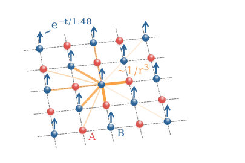
<figcaption class="paper-figure-caption"><b>Fig 1.</b> FIG. 1. Schematic illustration of the experimental proto- col. The atoms interact via a 1/r3 dipolar coupling and are partitioned into two sublattices, A and B. Starting from the classical N´eel state [Eq. (4)], a staggered field δ(t) = δ0e−t/1.48 is applied to the B sublattice, driving the adiabatic evolution.</figcaption>
</figure>
<figure class="paper-figure-card">
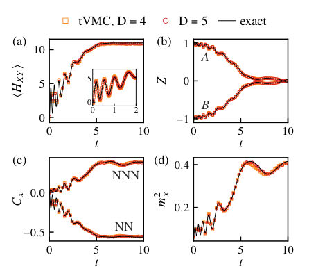
<figcaption class="paper-figure-caption"><b>Fig 2.</b> FIG. 2. Benchmark of the 4 × 4 AFM protocol against exact results. TNS-tVMC results are shown for bond di- mensions D = 4 and 5, using 81920 MC samples for both evolution and measurement. (a) average energy ⟨HXY ⟩, (b) averaged sublattice magnetization Z, (c) nearest- neighbor (NN) and next-nearest-neighbor (NNN) corre- lations Cx, and (d) squared staggered magnetization m2 x, all as a function of time.</figcaption>
</figure>
<figure class="paper-figure-card">
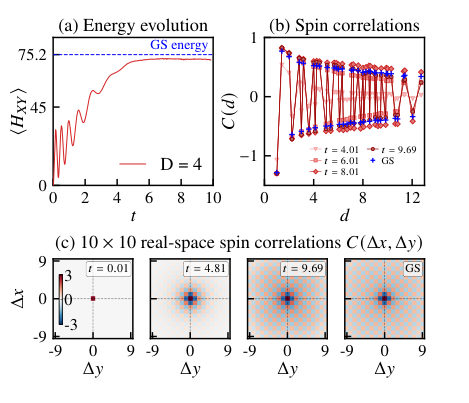
<figcaption class="paper-figure-caption"><b>Fig 3.</b> FIG. 3. Time evolution of the 10 × 10 AFM pro- tocol from TNS-tVMC with bond dimension D = 4 and Ns = 163840. (a) Energy ⟨HXY ⟩, relaxing to- ward the ground-state value (dashed blue line), which is computed by us using ground state VMC. (b) Con- nected spin correlation C(d) as a function of distance d at t = 4.01, 6.01, 8.01, 9.69, compared with the ground state. (c) Real-space correlation C(∆x, ∆y), averaged over all site pairs separated by displacement (∆x, ∆y), at t = 0.01, 4.81, 9.69 and in the ground state.</figcaption>
</figure>
<figure class="paper-figure-card">

<figcaption class="paper-figure-caption"><b>Fig 4.</b> FIG. 4. Sample-size convergence of the 10×10 AFM dy- namics at D = 4. The squared staggered magnetization m2 x, the most sensitive observable, is shown as a function of time for Ns = 81920 and 163840.</figcaption>
</figure>
</div>

<p><strong>Summary.</strong> The paper presents a novel tensor network Variational Monte Carlo framework that drastically improves the scaling of simulating long-range interacting quantum systems from $O(N^3)$ to $O(N)$. This breakthrough allows for accurate classical simulation of complex dynamics, such as those found in dipolar XY models realized with Rydberg atoms. It establishes a powerful tool for benchmarking future quantum hardware.</p>
<p><strong>Why it may be interesting.</strong> This work provides a crucial computational tool—a scalable classical benchmark—for simulating complex quantum dynamics on emerging hardware platforms like Rydberg and ion traps, bridging theory with experimental feasibility.</p>
<details>
<summary>Detailed structure</summary>
<p><strong>Main problem.</strong> Developing an efficient classical simulation method for two-dimensional quantum systems with long-range interactions, particularly those relevant to Rydberg arrays and ion traps.</p>
<p><strong>Main result.</strong> The authors developed a tensor network VMC framework that reduces the computational cost of local energy evaluation from $O(N^3)$ to $O(N)$, enabling accurate simulation of previously intractable dynamics for systems like the dipolar XY model on a $10 	imes 10$ lattice.</p>
<p><strong>Method.</strong> The core method is an efficient tensor-network time-dependent Variational Monte Carlo (tVMC) framework utilizing an adaptive basis approach to scale calculations from cubic to linear complexity with system size N.</p>
<p><strong>Model / system.</strong> The study focuses on two-dimensional long-range interacting quantum systems, exemplified by the dipolar XY model ($H_{XY} \propto 1/r^3$) realized in Rydberg simulators. The simulation tracks time evolution under a time-dependent Hamiltonian $H(t) = H_{XY} + H_Z(t)$.</p>
<p><strong>Key observables.</strong> Local energy, sublattice magnetization (Z), nearest-neighbor and next-nearest-neighbor correlations ($C_x$, etc.), and squared staggered magnetization ($m_{2\alpha}$).</p>
<p><strong>Important parameters / regimes.</strong> Long-range interaction decay ($\propto 1/r^3$), lattice size ($10 	imes 10$ for main results), and the time evolution parameter $\delta(t)$.</p>
<p><strong>Assumptions / limitations.</strong> The efficiency gain relies on an adaptive basis approach, which trades the zero-variance principle of fixed-basis VMC for computational tractability. For initial steps, Projected tVMC (p-tVMC) is used.</p>
<p><strong>Figures summary.</strong> Figures illustrate benchmarks comparing TNS-tVMC results against exact solutions for small lattices ($4 	imes 4$), showing the time evolution of energy and correlations; larger simulations ($10 	imes 10$) confirm long-range correlation maintenance during adiabatic protocols.</p>
<p><strong>Paper structure.</strong> The paper introduces the problem of simulating long-range interactions, details the novel tensor network tVMC framework achieving $O(N)$ scaling via adaptive bases, applies this to simulate the adiabatic real-time protocol for a dipolar XY model in Rydberg arrays, and concludes by benchmarking its accuracy against known ground state limits.</p>
</details>
<details>
<summary>Abstract</summary>
<p>In variational Monte Carlo (VMC) calculations of $N$-site quantum systems with arbitrary all-to-all two-body interactions, evaluating the local energy generally costs $O(N^3)$. We introduce a new framework that reduces this cost to $O(N)$ for tensor network states, capable of scalable and accurate computation of real-time dynamics and ground states. As a result, we obtain accurate simulations of the adiabatic real-time protocol of a $10\times10$ dipolar XY model realized in a Rydberg simulator [C. Chen et al., Nature 616, 691 (2023)], which was previously beyond the reach of classical simulation. Going beyond quantum experiments, we also directly perform ground state VMC to compare with the adiabatic state preparation. Our work demonstrates tensor network VMC as a powerful classical simulator for long-range quantum platforms such as Rydberg and ion-trap simulators, which are currently in urgent need of scalable classical benchmarking tools. As a separate technical contribution, we resolve the pathology of evolving from product states within of tensor network VMC.</p>
</details>
<p><sub><a href="#top">↑ back to top</a></sub></p>

<p><a id="paper-2607.05130"></a></p>
<h3 id="critical-behavior-of-the-driven-curie-weiss-model"><a href="http://arxiv.org/abs/2607.05130v1">Critical behavior of the driven Curie-Weiss model</a></h3>
<p><strong>Authors:</strong> Ruohan Xu, Faezeh Khodabandehlou, Christian Maes<br>
<strong>Type:</strong> theory · <strong>Category:</strong> statistical mechanics · <strong>PDF:</strong> <a href="https://arxiv.org/pdf/2607.05130v1">https://arxiv.org/pdf/2607.05130v1</a><br>
<strong>Analysis basis:</strong> full PDF text, analyzed in chunks
<strong>Topic relevance:</strong> 🔥 <code>driven-dissipative phase transition</code> <strong>4/5</strong> · 🔥 <code>non-equilibrium universality</code> <strong>4/5</strong> · <code>methods for driven-dissipative</code> <strong>3/5</strong> · <code>non-equilibrium dynamics</code> <strong>3/5</strong> · <code>Keldysh / 2PI / non-Gaussian methods</code> <strong>1/5</strong> · <code>correlated / nonlocal dissipation</code> <strong>1/5</strong></p>
<div class="figure-strip-hint">↔ Scroll figures horizontally</div>
<div class="paper-figures-scroll">
<figure class="paper-figure-card">
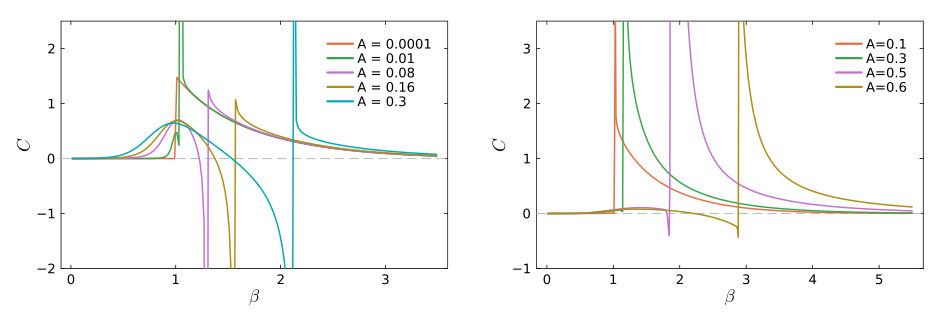
<figcaption class="paper-figure-caption"><b>Fig 1.</b> FIG. 1: Specific heat as a function of inverse temperature β for different values of A and ω. (a)</figcaption>
</figure>
<figure class="paper-figure-card">

<figcaption class="paper-figure-caption"><b>Fig 2.</b> FIG. 2: sinh−1 χ as function of β, for different values of A and ω.</figcaption>
</figure>
<figure class="paper-figure-card">
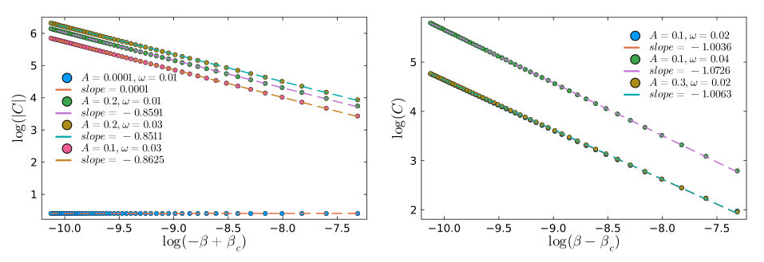
<figcaption class="paper-figure-caption"><b>Fig 3.</b> FIG. 3: Critical behavior of the specific heat for different values of A and ω in the vicinity of βc.</figcaption>
</figure>
<figure class="paper-figure-card">
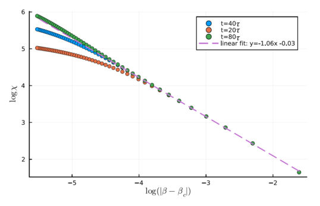
<figcaption class="paper-figure-caption"><b>Fig 4.</b> FIG. 4: Critical behavior of χ for A = 0.1 and ω = 0.3. The time t is that of averaging as multiple</figcaption>
</figure>
<figure class="paper-figure-card">

<figcaption class="paper-figure-caption"><b>Fig 5.</b> FIG. 5: Critical behavior of χ, predicted by formula (III.2), high-temperature approximation (III.1)</figcaption>
</figure>
</div>

<p><strong>Summary.</strong> This paper investigates the non-equilibrium thermodynamics of a driven Curie-Weiss magnet, mapping out its full phase diagram under time-periodic fields. Key findings include the observation of dynamical criticality, where specific heat diverges with different exponents depending on the direction relative to the critical temperature. The work demonstrates that external driving fundamentally alters both the nature and quantitative description of magnetic phase transitions.</p>
<p><strong>Why it may be interesting.</strong> It provides a detailed theoretical framework for understanding how non-equilibrium driving fundamentally alters critical phenomena, yielding exponents and phase boundaries inaccessible in standard thermal equilibrium treatments.</p>
<details>
<summary>Detailed structure</summary>
<p><strong>Main problem.</strong> The study focuses on completing the phase diagram and analyzing the critical behavior of a Curie-Weiss magnet when subjected to a time-periodic external driving field.</p>
<p><strong>Main result.</strong> The system exhibits dynamical criticality, with specific heat diverging at different exponents ($\alpha=1$ vs $\alpha\simeq 0.86$) depending on whether the inverse temperature is approaching or receding from the critical point.</p>
<p><strong>Method.</strong> The analysis employs mean-field theory combined with non-equilibrium calorimetry (AC-calorimetry) and linear response theory to calculate thermodynamic quantities like specific heat and susceptibility.</p>
<p><strong>Model / system.</strong> The model is the Curie-Weiss magnet described by a kinetic Ising model in mean-field approximation, subjected to an external field $h_0(t) = \delta_0 + A_0 \cos(\omega t)$. The dynamics are governed by a relaxational stochastic equation for magnetization $m(t)$.</p>
<p><strong>Key observables.</strong> Specific heat ($C$), magnetic susceptibility ($\chi$), and time-averaged magnetization $\langle m 
angle$.</p>
<p><strong>Important parameters / regimes.</strong> Inverse temperature ($eta$), driving amplitude ($A$), and driving frequency ($\omega$). The critical point $eta_c$ shifts due to the drive.</p>
<p><strong>Assumptions / limitations.</strong> The analysis often relies on approximations such as the near-quasistatic ansatz for AC-calorimetry, or perturbative expansions in small parameters like $A$.</p>
<p><strong>Figures summary.</strong> Figures illustrate specific heat divergence vs. $eta$ under varying driving parameters; they also compare contributions to heat capacity divergence in first-order versus second-order transition regimes.</p>
<p><strong>Paper structure.</strong> The paper systematically analyzes the phase diagram, derives equations for magnetization and response functions using mean-field theory, calculates $C$ via AC-calorimetry, and determines $\chi$ using linear response theory across different parameter regimes.</p>
</details>
<details>
<summary>Abstract</summary>
<p>We complete the phase diagram of the macroscopic Curie-Weiss magnet in a time-periodic external field, as a function of temperature and driving parameters. There is a regime (large enough driving amplitude and frequency, at low temperatures) where stable paramagnetic and ferromagnetic phases coexist. In particular, we present a new detailed analysis of the (nonequilibrium) specific heat, diverging at the same critical inverse temperature $β_c$ as the magnetic susceptibility. The new Curie temperature decreases with the driving, and we find critical exponent $α=1$ for $β\downarrow β_c$, and $α\simeq 0.86$ for $β\uparrow β_c$, even for small driving. A Floquet analysis shows the nature of the criticality, which is dynamical, with implications that remain unseen and are mostly impossible when the system is in thermal equilibrium.</p>
</details>
<p><sub><a href="#top">↑ back to top</a></sub></p>

<p><a id="paper-2607.05151"></a></p>
<h3 id="on-data-driven-parameterizations-of-multidimensional-generalized-langevin-dynamics-in-the-presence-of-a-quadratic-potential"><a href="http://arxiv.org/abs/2607.05151v1">On data-driven parameterizations of multidimensional generalized Langevin dynamics in the presence of a quadratic potential</a></h3>
<p><strong>Authors:</strong> Maximilian Braun, Martin Hanke, Niklas Wolf<br>
<strong>Type:</strong> theory · <strong>Category:</strong> statistical mechanics · <strong>PDF:</strong> <a href="https://arxiv.org/pdf/2607.05151v1">https://arxiv.org/pdf/2607.05151v1</a><br>
<strong>Analysis basis:</strong> full PDF text, analyzed in chunks
<strong>Topic relevance:</strong> 🔥 <code>methods for driven-dissipative</code> <strong>4/5</strong> · <code>Keldysh / 2PI / non-Gaussian methods</code> <strong>3/5</strong> · <code>correlated / nonlocal dissipation</code> <strong>2/5</strong> · <code>driven-dissipative phase transition</code> <strong>2/5</strong> · <code>non-equilibrium dynamics</code> <strong>2/5</strong> · <code>analog quantum simulation</code> <strong>1/5</strong> · <code>non-equilibrium universality</code> <strong>1/5</strong></p>
<div class="figure-strip-hint">↔ Scroll figures horizontally</div>
<div class="paper-figures-scroll">
<figure class="paper-figure-card">

<figcaption class="paper-figure-caption"><b>Fig 1.</b> Fig. 5.1. Autocorrelation function of Example 5.1 versus time t and the three numerical approx- imations. Each panel shows the scalar graphs corresponding to the respective entry of the matrix- valued function.</figcaption>
</figure>
<figure class="paper-figure-card">
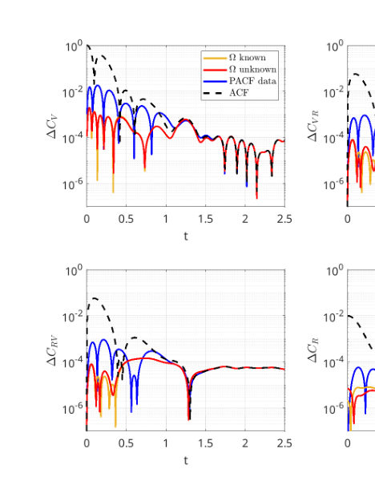
<figcaption class="paper-figure-caption"><b>Fig 2.</b> Fig. 5.2. Absolute error between the true autocorrelation function of Example 5.1 and the three approximations. Each panel contains the scalar graphs corresponding to the error of the respective entry of the matrix-valued approximation. The black dashed lines show the target functions for additional information.</figcaption>
</figure>
<figure class="paper-figure-card">
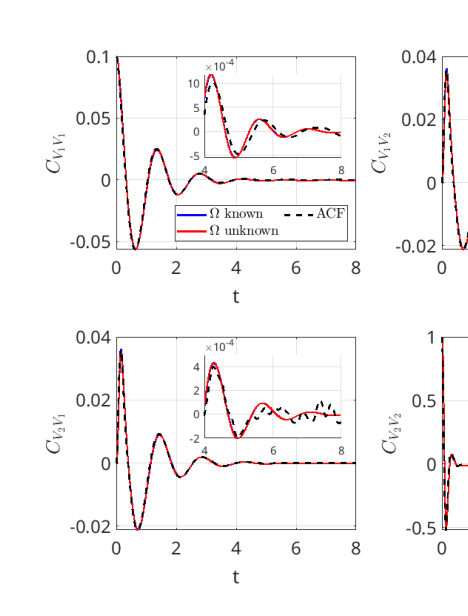
<figcaption class="paper-figure-caption"><b>Fig 3.</b> Fig. 5.3. Velocity autocorrelation function of Example 5.2 versus time and the two approxi- mations with and without the integral constraint (4.12d). Each panel shows the scalar graphs corre- sponding to the respective entry of the matrix-valued function.</figcaption>
</figure>
<figure class="paper-figure-card">

<figcaption class="paper-figure-caption"><b>Fig 4.</b> Fig. 5.4. Position autocorrelation function of Example 5.2 versus time and the two approxi- mations with and without the integral constraint (4.12d). Each panel shows the scalar graphs corre- sponding to the respective entries of the matrix-valued function.</figcaption>
</figure>
<figure class="paper-figure-card">

<figcaption class="paper-figure-caption"><b>Fig 5.</b> Fig. 5.5. Absolute error between the given velocity, position and cross correlation of Example 5.2 and the two approximations. The left panel shows the approximation error where Ωis known, the right panel where Ωis unknown, respectively.</figcaption>
</figure>
</div>

<p><strong>Summary.</strong> This paper presents a numerical algorithm to simplify the description of complex physical dynamics governed by Generalized Langevin Equations. It achieves this by using autocorrelation data to directly construct an equivalent, simpler Markovian model via Prony series fitting. This method is valuable for simulating systems with memory effects in condensed matter physics.</p>
<p><strong>Why it may be interesting.</strong> While focused on classical statistical mechanics, the techniques for constructing effective low-dimensional models (Markovian embedding) from complex time correlation functions are highly relevant to open quantum systems where memory effects or environmental coupling must be modeled efficiently.</p>
<details>
<summary>Detailed structure</summary>
<p><strong>Main problem.</strong> The paper addresses the challenge of parameterizing the complex, memory-dependent dynamics described by Generalized Langevin Equations (GLEs) for coarse-grained physical systems.</p>
<p><strong>Main result.</strong> A novel data-driven algorithm is proposed that constructs an equivalent Markovian model directly from velocity autocorrelation function data using Prony series approximation, bypassing the need to first calculate the system's memory kernel.</p>
<p><strong>Method.</strong> The methodology involves fitting the autocorrelation function $C_V(t)$ via a Prony series expansion and then mapping these parameters onto the coefficients of an effective Ornstein-Uhlenbeck (OU) process that governs the system's dynamics.</p>
<p><strong>Model / system.</strong> The underlying model is multidimensional generalized Langevin dynamics, often simplified by assuming a quadratic external potential $\Phi(R)$. The analysis applies to molecular dynamics simulations of liquids and general coarse-grained particle systems.</p>
<p><strong>Key observables.</strong> Velocity autocorrelation function ($C_V(t)$), position autocorrelation function ($C_R(t)$), cross-correlations, and the resulting stationary covariance matrix ($\Sigma_0$).</p>
<p><strong>Important parameters / regimes.</strong> The number of auxiliary variables required for the Markov model (e.g., 5 for 1D, 12 for 2D) is a key result.</p>
<p><strong>Assumptions / limitations.</strong> Key assumptions include assuming $M=mI$, that the potential is quadratic, and relying on the ability to approximate the continuous autocorrelation function using finite data points suitable for Prony series fitting.</p>
<p><strong>Figures summary.</strong> Figures compare the reconstructed autocorrelation functions ($C_V$) derived from the proposed method against known values, showing good agreement, especially for velocity correlations. Error analysis (Frobenius norm) is also presented.</p>
<p><strong>Paper structure.</strong> The paper develops theory by relating GLEs to Markovian embeddings, derives necessary mathematical constraints using properties of autocorrelation integrals, and finally implements a data-driven fitting procedure using Prony series approximation on numerical simulation data.</p>
</details>
<details>
<summary>Abstract</summary>
<p>We propose a numerical algorithm to construct a Markov model with an extended list of variables to parameterize the equation of motion of a multidimensional coarse-grained physical system in an external potential, when memory effects are relevant. Our method uses autocorrelation data of the stationary velocities, but it avoids the inverse problem of finding the corresponding memory kernel from these data in a first step. Rather, the data are used to construct a Prony series approximation of the autocorrelation function, and the parameters of this Prony series provide the corresponding Markov model. Numerical results for molecular dynamics data show a good match for parameterized models with five auxiliary variables for a one-dimensional, and twelve auxiliary variables for a two-dimensional system.</p>
</details>
<p><sub><a href="#top">↑ back to top</a></sub></p>
<hr>
<p>
<a href="index.html">← Index</a>
 · <a href="papers_01.html">← Previous</a> · <a href="papers_03.html">Next →</a>
</p>
<hr>

</body>
</html>
